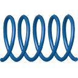
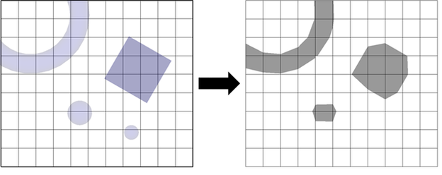
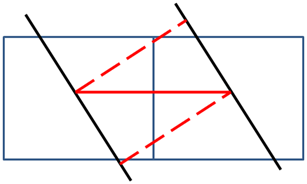
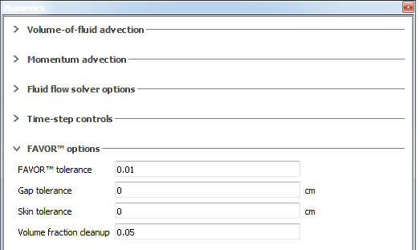
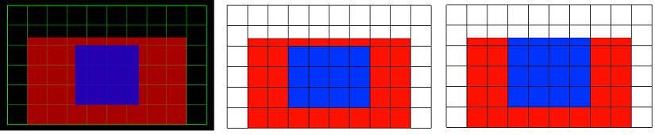
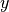
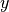
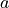
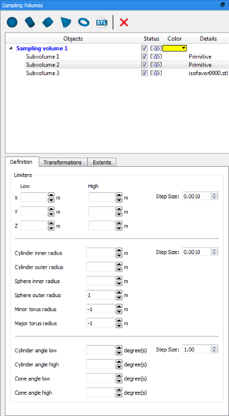

Model Setup¶
Layout, controls, and general behavior¶
This chapter is intended provide high-level guidance on what options are available on the Model Setup tab and how to use them. For each topic there is usually a supplementary section with more detail in Model Reference, Theory, or Input Variable Summary. For a guided tour of the model setup procedure, see the Model Setup section of the Tutorial / Quick Start chapter.
The Model Setup tab is where most of the detailed, graphical work on the input file for each simulation is done. It is organized by different dock widgets, each of which are movable/dockable and opened from the process toolbar on the left side of the screen. A brief description of the icons and a link to the relevant sections are provided in the table below.
ICON DESCRIPTION DISCUSSION/DETAILS Open the Global dock widget Global Open the Physics dock widget Physics Open the Fluids dock widget Fluids Open the Geometry dock widget Geometry Open the Meshing dock widget Meshing Open the Boundaries dock widget Mesh Boundary Conditions Open the Initial dock widget Initial Conditions Open the Output dock widget Output Open the Numerics dock widget Numerical Options Open the FAVORize dock widget Reviewing the FAVORized Geometry and Mesh Open the Simulate Options Simulation Pre-check, Preprocessing, and Running the Solver Open FlowSight Post-processing in FlowSight Open the Probes dock widget History Probes Open the Flux dock widget Flux surfaces Open the Sampling Volume dock widget Sampling Volumes Open the Global Conditions dock widget Global conditions for active simulation control Open the Baffles dock widget Baffles  Open the Springs dock widget Springs, Ropes, and Mooring Lines Open the Sources dock widget Mass-momentum sources Open the Valves dock widget Valves Open the Particles dock widget Particle blocks and sources
Also, before proceeding, it is worth noting the mouse controls that are used in the graphical display areas of the FLOW-3D user interface:
BEHAVIOR BUTTON / KEY ACTION DESCRIPTION Rotate Left Click and hold Click and hold the left-mouse button and move the mouse in the Geometry window. The model will rotate accordingly. Zoom Middle-button / Scroll wheel Scroll / click and hold Roll the middle wheel or click and hold the middle-mouse button while moving the mouse forward and backward to zoom. Pan Right Click and hold Click and hold the right-mouse button and move the mouse in the window. The model will move with the mouse. Set focus on object N/A Hover cursor over object Hovering the cursor over an object will activate the object for further manipulation via the right-click menu. The object will highlight as it is activated. This is only done when the preference on the Geometry tab is enabled. Select Left Double-click Double-clicking on an object will select and activate the object for further manipulation via the right-click menu. This is only enabled if the preference on the Geometry tab is disabled. Access object properties Right Click Right-clicking on the highlighted object will present a list of options to identify the object, show/hide, enable/disable, adjust transparency, etc. Return cursor coordinates (probe) Left shift+click Hold the Shift key to turn the cursor into a target. Click while holding the Shift key to get the coordinate of a surface, shown in the lower left-hand corner of the screen. Place pivot point Left cntrl+click Hold the Ctrl key to turn the cursor into the pivot icon. Click while holding the Ctrl key to set the pivot point. The view will rotate around the pivot point. Toggle the Custom Pivot button above the view pane to turn the pivot point off.
There are some additional controls and options in the drop-down menu:
- Depth Peeling: Enable/disable a more advanced transparency method called depth peeling. This method is more computationally expensive than the default method but can give a better display.
- Axis Rotation: This shows a toolbar with three controls that allow the view to be rotated about each axis independently and precisely.
- Pan/Zoom/Rotate speeds: Control how quickly the display will pan, zoom, and rotate in response to an input.
- Mouse Hover Selection: Switch between mouse-hover selection (enabled) or manual selection (disabled).
- Options: Adjust the colors of the display.
Finally, the menu provides the ability to:
- Boolean: Color subcomponents by whether they are a solid or a hole.
- Back face: Color the inside of a subcomponent differently from the outside when using clipping planes.
- Wire frame: Show the geometry in a wire-frame view.
- Draw Axis: Control where the coordinate system is drawn.
- Pivot point options: Control the visibility, size, and location of the pivot point.
- Show 3D length scale: Display the dimensions of the domain in the coordinate directions.
- Display box: Show a simple box when rotating instead of the actual geometry. This can help when working
with very large
STLorASCfiles. - Highlight cell: Highlight a cell given the mesh block number and either the i, j, k index or the x, y, z location.
Global¶
The Global widget can be accessed from within the tab by clicking the Global button, , on the process toolbar. Within the Global widget, the user can define several high level settings, including the Pressure Type, Start and Finish Conditions, and Version Options.
Units¶
The simulation units are defined when a new simulation is created and cannot be changed after this point in the simulation setup as discussed in the Adding a new simulation to a workspace section of the Tutorial / Quick Start. However, the selected unit system is displayed at the top of the Global widget for reference. The selected Units are used to define defaults for known parameters (e.g., the Stefan-Boltzmann constant) and are also used for (1) unit conversions as materials are loaded from the Materials Database and (2) unit conversions when Post-processing in FLOW-3D.
It is important to note that FLOW-3D does not track the units associated with any of the input variables, so it is the user’s responsibility to ensure that all parameters are input using consistent units of mass, length, time, temperature, and charge. To facilitate this, the dimensions of every parameter are included in the Input Variable Summary chapter.
FLOW-3D supports , , , and unit systems. The units for , and unit systems are provided in the table below:
| PHYSICAL DIMENSION | SI | CGS | Engineering |
|---|---|---|---|
| Mass | kilograms | grams | slugs |
| Length | meters | centimeters | feet |
| Time | seconds | seconds | seconds |
| Temperature | Kelvin / Celsius | Kelvin / Celsius | Rankine / Farenheit |
| Charge | Coulomb | statCoulomb | N/A |
If the user needs additional flexibility in the choice of units, then the
option may be used to explicitly specify the units of mass, length and time. However,
the GUI restricts the user from mixing and
unit classes. The following table shows the
units compatible with the and
unit systems. The user may mix and
units by specifying the unit system in the prepin.*
file.
| PHYSICAL DIMENSION | Metric | Engineering |
|---|---|---|
| Mass | kg, g, mg | lbm, slug |
| Length | m, cm, mm | ft, in |
| Time | s, ms, min | s, ms, min |
| Temperature | K, C | R, F |
| Charge | N/A | N/A |
Note
The unit of charge is chosen automatically based on the unit system. For the and unit sytems, the unit of charge is set to coulomb and statCoulomb respectively. The Electro-mechanics model cannot be used with the or unit systems.
See also
Pressure Type¶
The user must define the Pressure type to be or to specify the format for all pressure inputs throughout the GUI. If pressure is selected, the Reference pressure is used to define default parameters where absolute pressure values are required (eg. cavitation model, equation of state). The Reference pressure is also used to define default pressure values in the initial conditions when using either of the Pressure type options. The default Reference pressure is equal to 1 atm, but this value can be changed in the menu.
Start and Finish Conditions¶
Finish conditions define when to stop the simulation under normal conditions. The Finish time is required for all simulations, but Additional finish conditions can be added to stop the simulation when the specified criteria are met.
Finish time: The simulation time when the simulation is considered complete and is stopped. If thermal die cycling is activated, it is set equal to the total duration of all of the die cycles.
Additional finish conditions: Supplemental conditions used to identify when to stop a simulation.
None (finish time only): No additional finish condition.
Fill fraction: The simulation will terminate when the fill fraction (the ratio of the total fluid volume to the total non-solid volume) reaches the value specified in the Finish fraction box.
Solidified fluid fraction: The simulation will terminate when the solidified fluid fraction (the percent of fluid that is solidified) reaches the value specified in the Finish fraction box. This is only available if the solidification model is turned on (see Physics).
Number of cycles: The simulation will terminate when the number of cycles (time steps) reaches the specified value.
Steady-state: The simulation will terminate when all of the selected quantities vary from their mean value in the specified Time window by less than the specified Variation threshold. The user can select up to six quantities that can be watched for the Steady state finish condition (Steady-state watch list). These quantities are:
- Total mass
- Total fluid energy
- Total solid energy
- Average mean kinetic energy
- Average mean turbulent energy
- Average mean turbulent dissipation
Active Simulation Control of Termination: Probe conditions are defined as additional conditions to actively control the termination of the simulation. One probe condition is a logic evaluation with the specified Probe Variable measured by the history probe specified in Probe ID with respect to the Critical Value. Any probe can be used for defining the probe conditions. The available Probe Variables are dependent on the physical models activated. Use Absolute Value specifies if to use absolute variable value returned by the probe for logical evaluation. Time Delay specifies the time duration after the logic is satisfied to trigger the condition. If multiple probe conditions are present, the Event condition logic between the probe conditions needs to be specified. Currently only ALL or ANY are allowed. If ALL is specified, then all probe conditions have to be satisfied to terminate the simulation. On the other hand, if ANY is specified, then any probe condition is satisfied will terminate the simulation.
See also
Model Reference -> Active Simulation Control for more information.
Restart¶
A restart simulation is a continuation from a previous FLOW-3D simulation. The
restart simulation may simply pick up where a previous simulation ended and
continue to a later time, or parameters may be changed to simulate something
different. In either case, the output data is transferred from the old grid to
the new one via interpolation in the regions where the grids overlap, while
regions in the new mesh where no restart data is available are initialized
using data from the new input prepin.* file. Components can usually be
added to restart simulations without trouble, but difficulties may arise if
components are removed from a restart simulation because there is no solution
data where the component was previously located. Similarly, baffles may also
be added or removed in restart simulations but may cause pressure iteration
problems as the flow field adjusts. The computational grid can be changed
arbitrarily as long as both initial and restart grids use the same
Coordinate System (Cartesian or cylindrical). The preprocessor may
report an error if some required data is not available in the output from the
previous simulation (e.g., if turbulence is turned on for the restart but was
not active in the original). Special restart options included to handle these
scenarios are described below.
Creating a Restart Simulation¶
To set up a restart simulation, right-click on the previous (original) simulation in the Portfolio on the Simulation Manager tab and select Add Restart Simulation….
A New Simulation dialog box will open with options to name the
restart simulation and copy certain files relevant to the simulation (e.g.,
STL files). Selected geometry files will be copied to the new
directory for the restart simulation. If the files are not copied, FLOW-3D will
specify the original simulation geometry file locations for the restart
simulation. The default Create Subdirectory Using Simulation Name
keeps the simulations organized in separate folders, and is required for
restart simulations. OK creates the new simulation input file,
folder, and geometry files.
Restart options¶
The Restart Options are accessed within the Global widget of the tab. The Restart Options dialog is automatically activated when the restart simulation is created, and appears as below:
General¶
- Activate Restart Options: Sets the simulation to begin from an
existing output
flsgrf.*file, specified as the Restart Source File. - Restart Source File: Defines which
flsgrf.*file contains the data to use as the initial conditions for the current simulation.
Events¶
Maintain Event Status: Specifies if to maintain active simulation control event status in the restart source.
See also
Model Reference -> Active Simulation Control for more information.
Time¶
- Restart Time: Specifies the time in the restart source file to be used as the initial conditions of the restart simulation.
- Reset Time to Zero: Makes the time in the restart source file equal to t = 0 in the restart simulation. If this option is not selected, the restart simulation will begin with t=Restart Time, and the new Finish time must be increased accordingly on Global widget. Keep in mind that if there are time-dependent parameters in the input file (e.g., boundary conditions or moving object parameters), and Reset Time to Zero is selected, the time dependent variables will start at t = 0 again in the restart.
- Initial Time Step: Specifies the size of the first time step in the restart simulation. If this is not specified, the time step will be estimated from the restart data.
Fluid Initialization¶
- Fill Non-Empty Cells With Fluid #1: Sets the fluid fraction in
all cells to unity, completely filling the domain with fluid. The added fluid volume
and energy are reported in the solver summary
hd3out.*and messagehd3msg.*files. This is often used in metal-casting simulations to avoid numerical porosity (noise) when using a filling simulation as the restart source for a simulation of the solidification. - Reset Velocities to Zero: Resets all velocities to zero and sets pressure to the
atmospheric pressure defined by
PVOID. This is often used in metal-casting simulations to avoid numerical noise when using a filling simulation as the restart source for a simulation of the solidification. - Use F * VF from the restart source file: Uses the product of the fluid fraction and the volume fraction to initialize the fluid fraction in the restart simulation. This is useful when a new free surface is created by removing geometry for the restart simulation.
Turbulence¶
- Restart With All Data as Needed: Assumes that the restart source simulation used a turbulence model and that this data will be used to initialized the associated parameters in the restart simulation.
- Do Not Use TKE or DTKE Data: Allows a turbulence model to be activated in the restart simulation when the restart source simulation used the laminar flow model.
- Do Not Use Mu, TKE, or DTKE Data: Allows turbulence and/or viscous flow models to be activated in the restart simulation when the restart source simulation assumed inviscid flow.
Scalar Transport¶
- Restart With All Scalar Data: Assumes that scalar data needed by the restart simulation is present in the restart source simulation.
- Scalar Data Reset in Input: Allows scalar physics to be activated in the restart simulation, and allows initial concentrations of scalar to be set using the parameters in the input file.
Particles¶
- Reset With All Particle Data: Assumes that particle data needed by the restart simulation is present in the restart source file.
- Particle Data Reset in Input: Allows particle physics to be introduced in the restart simulation or resets existing particle location data to that specified in the input file.
Note
History probes/particles are read from the results file during restart simulations by default. An option exists on the Particles widget to reset each particle in the restart simulation.
Thermal Options Restart Data¶
- Restart With All Data as Needed: Uses the full thermal solution from the restart source simulation.
- Fluid/Solid Temperature Reset in Input: Resets fluid, component, and mesh boundary temperatures, as well as component moisture content (see Moisture Drying Model) using information from the new simulation input file. Allows heat transfer to be activated when it was not used in the restart source file.
- Use Solid Temperatures Only: Only component temperatures from the first run are used for the restart calculation. All other parameters are reset, including fluid initialization.
- Void Data Reset in Input: Resets the number of voids and void heat transfer data to values specified in the input file.
Thermal Options Initialization¶
- Restart Based on Internal Energy: Calculates temperature using internal
energy data from the
flsgrf.*file. - Restart Based on Temperature: Calculates internal energy based on the
temperature data from the
flsgrf.*file. This is recommended when the fluid thermal properties in the restart simulation differ from those used in the restart source simulation. For example, activating the solidification model in the restart simulation introduces the latent heat of fusion into the internal energy, so using the internal energy from the restart source file would not give the correct temperatures.
Thermal Options Solidification Data¶
- Don’t Evaluate Solidification Data: The restart simulation neither reads nor writes Solidification data.
- Evaluate Solidification Data: Evaluates solidification data and writes it to the new output file. This is the default for Solidification simulations.
- Restart with Previous Solidification Data: Reads
Solidification data from the previous simulation output and
writes Solidification output to the new
flsgrf.*file.
Version Options¶
These options control which of the two solvers and the number of processors to use to run the simulation.
- : Use whatever configuration is defined in the Preferences.
- : User will be prompted to choose a solver (Double precision or Custom double precision), the number of processors on which to run the simulation, and the solver token type (serial or parallel; see Tokens for more information).
Physics¶
FLOW-3D includes a wide variety of models that can be used to include different
physical mechanisms into the calculation. The Physics dock widget is
accessed within the tab by clicking the Physics button,  ,
on the process toolbar.
,
on the process toolbar.
Interface Tracking, Number of Fluids, and Flow Mode¶
The Interface Tracking option defines whether the fluids represented by the fluid fraction are miscible or not.
- : The fluids are immiscible and form a sharp interface.
- : The two fluids mix readily and the interface between them is diffuse. For one-fluid problems this implies that the domain is entirely filled with fluid 1.
The Number of fluids option defines how regions with a fluid fraction of zero are treated.
- : A fluid fraction of zero represents a region of uniform pressure, temperature, and density called a void. It is assumed that the inertia of the void is negligible relative to the inertia of the fluid. The governing equations are only solved in cells with a fluid fraction of one; the void is use to apply a boundary condition on the fluid cells.
- : A fluid fraction of zero represents a second fluid (Fluid 2). In this case, the governing equations are solved for all fluid cells, regardless of the fluid fraction.
The Flow mode defines what version of the continuity equation is enforced (see Mass Continuity Equation and Its Variations).
- : All fluid is incompressible or has some limited compressibility.
- : Fluid 2 (represented by a fluid fraction of zero) is a compressible gas with pressure, temperature, and density related by the ideal gas law. Fluid 1 (represented by a fluid fraction of one) is still treated as incompressible. This option is only available when the Number of fluids is set to .
Physical models¶
All of the available physical models are shown in the Physics dock widget, and are inactive by default. After a model is activated, it is displayed in the Active physics models section. The user can apply a Physics model filter to limit the display of available models to those that are commonly used within their application. A new or existing filter can be applied by clicking the drop down arrow next to the green add button.
Brief descriptions of each physical model are given below for convenience; more detail can be found in both the Theory and Model Reference chapters.
MODEL DESCRIPTION Air entrainment The air entrainment model is used to model the motion and effects of air entrained at turbulent free surfaces. For more information, see Air Entrainment. Bubble and phase change The bubble and phase change models are used to control the pressure-volume-temperature relationship for void regions and to model liquid-vapor phase change for one and two-fluid problems. For more information, see Bubble and Void Region Models, Adiabatic Bubbles, Cavitation and Bubble Formation (Nucleation), Phase Change with Thermal Bubbles, Two-fluid Model, and Two Fluids with Non-condensable Gas Cavitation The cavitation model is used to identify locations where cavitation is expected to occur and can also be used to approximate the opening of a cavitation bubble. For more information, see Cavitating Void Regions and Cavitation and Bubble Formation (Nucleation). Core gas The core gas model is used to simulate the effects of binder decomposition in sand cores on the casting. For more information, see Core Gas Generation and Flow in Sand Cores and Molds and Core Gas. Combustible objects The combustible objects model is used to approximate the combustion of a solid material. For more information, see the Theory manual section Combustible Object Model and the Model Reference section Combustible Objects. Defect tracking This model is used to track oxide formation on the free surface. For more information, see Defect Tracking and Lost foam residue tracking. Density evaluation The density evaluation model is used to control how density is calculated in a simulation. For example, the density could be computed as a function of salinity, or it could be evaluated from an equation of state. For more information, see Density Evaluation and Density advection. Dissolving objects The dissolving objects model is used to compute the mass transfer from a dissolving solid object. For more information, see Dissolving Solid Solute Model. Drift-flux The drift flux model approximates the interaction of a dispersed phase (e.g., air bubbles) on a surrounding continuous phase (e.g., water). For more information, see Drift-Flux Model and Drift Flux. Elasto-visco-plasticity This model includes an elastic stress term into the fluid stress tensor and can be used to model viscoelastic fluids. For more information, see Elastic and Plastic Materials and Elastic fluid example: Bingham Material Approximation. Electro-mechanics This model is used to simulate electrostatic effects on the fluid and solid objects in the domain. For more information, see Electric Field Model, Electro-thermal Effects, Dielectrophoresis, and Particle Movement and Fluid Flow Due to Electric Field. Granular flow The granular flow model is used to simulate the bulk motion of high concentration granular media. For more information, see High Concentration Granular Media Model, Granular Flow, and Granular flow application example: Core Blowing. Gravity and non-inertial reference frame This model applies both constant body forces (e.g., gravity) and non-constant, non-uniform body forces resulting from an accelerating reference frame. For more information, see Gravity, Rigid Body Dynamics for Non-Inertial Reference Frame, Non-Inertial Reference Frame Motion, Impulsive Motion of Non-inertial Reference Frame, Smooth Tabular Motion, and Rigid Body Dynamics. Heat transfer The heat transfer model enables the simulation of conduction, convection, and radiation in the domain. For more information, see Heat Conduction and Heat Transfer, Structure Temperature Equation, Wall Heat Transfer, Heat Transfer across Baffles, Heat Transfer and Conduction in Components, and Heat Transfer to Voids. Lost foam The lost foam model is used to simulate the decomposition of foam in the lost foam casting process. For more information, see Lost Foam Model and Lost Foam Casting Process. Moisture The moisture model is used to model the effect of moisture in porous media on heat transfer and the flow field. For more information, see Moisture Drying Model. Moving and simple deforming objects The moving and simple deforming objects model, often referred to as the general moving objects (GMO) model, is used to allow objects to move within the domain. For more information, see General Moving Objects Model and General Moving Objects. Particles The particle model is used to introduce Lagrangian particles into the solution and compute the effects of these particles on the flow. For more information, see Discrete Particle Dynamics, Particles, Sampling Volumes, and Baffles (for counting particles at flux planes and sampling volumes). Reaction kinetics The reaction kinetics model is used to calculate the change in concentration of scalar quanties based on user defined reaction rates. For more information, see Reaction Kinetics, Reactive Flows Algorithm. Scalars Scalars are used to represent various substances that are transported in the flow. For example, a scalar could represent a contaminant (e.g., chlorine), salinity, dye, etc. For more information, see General Scalar Transport, Scalar Advection, and Scalars. Sediment scour The sediment scour model approximates the effects of the flow on the erosion of surfaces and the transport of sediment. For more information, see Sediment Scour Model and Sediment Scour and Deposition. Shallow water The shallow water model is used to approximate the flow field when the fluid depth is much less than the fluid extents in the other dimensions. This is particularly useful for large-scale simulations. For more information, see Shallow Water Model and Shallow Water Model. Sludge settling The sludge settling model is used to simulate sludge settlement in septic tanks, clarifiers and other sewage treatment equipment. For more information, see Sludge Settling Model and Sludge Settling. Solidification The solidification model simulates the effects of solid-liquid phase change. For more information, see Solidification Shrinkage and Porosity Models, Solidification Drag, Solidification, Solidification Shrinkage, Macro-Segregation during Alloy Solidification. Surface tension The surface tension model includes surface tension effects on the interface between fluid 1 and fluid 2. For more information, see Surface Tension with Wall Adhesion and Surface Tension. Thermal die cycling The thermal die cycling model is used to approximate the effects of earlier castings in a high-pressure die casting process on the heat transfer solution. For more information, see Thermal Die Cycling. Viscosity and turbulence The viscosity and turbulence model adds the computation of viscous stresses and turbulence quantities to the solution. For more information, see Wall Shear Stresses, Wall-Shear Stress, Turbulence Models, Wall Effects: Slip, Shear, and Component Roughness, and Viscous stress solver options. Wind The wind model is used to apply a fixed shear stress tangential to the free surface. For more information, see Wind Shear Stress.
Fluids¶
The properties for fluids are defined within the Fluids widget of the
tab. The Fluids widget can be accessed by clicking the Fluids button,  , on the process toolbar.
, on the process toolbar.
All fluid properties can be defined manually or loaded from the Materials Database by clicking the Load material properties
button,  , on the Fluids widget. In the Properties for options, select either
or . When setting up a simulation, only properties for must be defined.
For simulations, properties for both and must be defined (See Interface Tracking, Number of Fluids, and Flow Mode).
Additionally, the specific properties that must be defined for each fluid will depend on which physical models are activated.
In the Properties for options, select and define or properties if
using physical models involving phase change and/or surface tension.
, on the Fluids widget. In the Properties for options, select either
or . When setting up a simulation, only properties for must be defined.
For simulations, properties for both and must be defined (See Interface Tracking, Number of Fluids, and Flow Mode).
Additionally, the specific properties that must be defined for each fluid will depend on which physical models are activated.
In the Properties for options, select and define or properties if
using physical models involving phase change and/or surface tension.
Note
- The materials database only includes properties for commonly used material types (eg. ). For all other materials, the user can add additional entries into the materials database (See Materials Database).
- All properties must be entered in units that are consistent with all other variables used in the input file.
Geometry¶
Geometry is constructed in FLOW-3D by assembling solid geometric objects to
define the flow region for a simulation. The flow geometry is then
embedded in the computational grid by the preprocessor using a technique
called FAVORTM, an acronym for Fractional Area/Volume Obstacle
Representation. This method computes the open area fractions (AFT, AFR, AFB)
on the cell faces along with the open volume fraction (VF) and reconstructs
the geometry based on these parameters. This approach offers a simple and
accurate way to represent complex surfaces in the domain without requiring a
body-fitted grid.
FAVOR¶
FAVORTM is a very powerful method for incorporating geometry effects into the governing equations but, like all discrete methods, it is affected by the resolution of the computational grid. This is because the preprocessor generates area fractions for each cell face in the grid by determining which corners of the face are inside of a defined geometry. If all four corners of a cell face are inside the geometry, then the entire face is defined to be within the geometry. Similarly, if all corners lie outside, then the entire face is assumed to be outside the geometry. When some face corners are inside a geometry and some are outside, the intersection of the geometry with face edges are computed. Area fractions are then computed from these intersection points assuming straight-line connections between intersection points within the face. The straight-line assumption introduces a small error in the fractional area when the geometry boundary is curved inside the cell. The approximation is consistent with the other assumptions in the development of the equations and improves as the grid resolution is refined.
The implication of this construction is that features that are smaller than the cell size are not resolved. More specifically, any piece of a geometry that extends across a cell face, but does not include a corner of that cell face, is not recognized by the area fraction generator. For instance, a small spherical object (say smaller than a mesh cell) will not be recorded unless it covers at least one grid vertex, as illustrated for the circle in the lower right corner of the mesh shown below. For some geometries and mesh resolutions it is possible that the geometry may intersect a cell face more than once. In this case the corresponding cell edge is assumed to be either fully inside the object or fully outside. The representation is improved as the mesh resolution is increased (i.e., the cell size is decreased).
Figure 2: Object definition (left) and object created (right).
Exact areas are sometimes essential when modeling precise inflow and outflow rates
at the boundaries of the grid. To help the user in this regard, the
preprocessor summary file prpout.* and the report file
report.* contain the computed open areas at each boundary of the grid.
Additionally, the preprocessor generates plots along each coordinate axis,
where the open area in the plane perpendicular to the axis is plotted versus
the axis coordinate.
Closing Gaps in Geometry¶
When multiple STLs are used, gaps might be introduced due to the FAVORTM. These gaps are usually unwanted, and for most cases, have to be closed. As an extension to FAVORTM, a gap closing algorithm is implemented for this purpose.
When processing the geometry, the center point and the normal of the cut faces for each component are computed, as shown below. This information is used to compute the gap size.

Assume the cut faces are relatively parallel to each other, the distance between the two cut faces can be easily computed. If the distance is smaller than the gap tolerance, the gap is then closed by setting the cell volume fractions to zero (fully filled by solid).

To simplify the cut face searching, only nearest neighbors are searched. As a result, the cell size has to be larger than the gap size. For the gaps that are larger than the cell size, they will be considered as the geometry feature that needs to be resolved, and thus will not be closed. On the other hand, since the gap size is computed based on the cut face information, the mesh must be fine enough to avoid multiple cuts from one component in one cell to ensure the cut face information is accurately computed.

To reduce the memory usage, it is assumed that there are a maximum of three components in one cell. Gaps are closed on a component basis, but gaps between subcomponents can also be closed as long as they do not cut the same cell.
The gap tolerance is defined under . The default value is 0.0, which means the gap closing algorithm will not be applied.

Due to uncertainties in the cut cell calculations, it is recommended that the gap tolerance should be specified to be slightly (10%) larger than the real value. Even so, it is possible that not all gaps are closed, and it is always recommended to check the critical locations before running the full simulation.
Note
For more information about components and subcomponents, please refer to Creating Geometry Objects.
Converting skins¶
Due to the same reasons that cause the formation of gaps, components can occasionally be covered by a thin layer of artificial skin from another component. If the two components have very different properties, the thin skin needs to be converted to the base component it covers. As another extension to FAVORTM, skin conversion is implemented for this purpose.
The skin thickness is computed based on the cut cell information, similar to the gap distance. If the skin thickness is less than the specified skin tolerance, the cell component number is changed to the base component it covers. Below is an example showing the geometry configuration (left) and the cell component number before (middle) and after (right) skin conversion.

Since the skin thickness is computed similar to the gap distance, it suffers from the same limitations. The cut faces must be relatively parallel to each other, and the cell size must be larger than the skin size. Additionally, the cell size must be small enough to avoid multiple cuts from one component in a single cell. Lastly, this method also assumes a maximum of three components in one cell.
The skin tolerance is defined under . The default value is 0.0, which means the skin converting algorithm will not be applied.
Due to uncertainties in cut cell calculations, it is recommended that the skin tolerance is specified to be slightly (10%) larger than the actual value. Even so, it is possible that not all skins are converted, and it is always recommended to check the critical locations before running the full simulation. To ensure the cut cell information is computed correctly, and to avoid multi-cut issues as described above, it is recommended to not cut a hole using the base component when defining the skin component.
Note
Skin conversion is not compatible with cores/liners in thermal die cycling simulations.
Reviewing the FAVORized Geometry and Mesh¶
The Fractional Area-Volume Obstacle Representation (FAVORTM) method used exclusively in FLOW-3D smoothly blocks out fractional portions of grid cell faces and volumes. FAVORTM applies a collection of special algorithms to compute interfacial areas, enhance numerical stability, and compute advection and stress along solid boundaries. The FAVORTM algorithms are initially executed once when the user preprocesses the simulation (or runs it), and at every time step if the geometry changes during the simulation (e.g. when using the General Moving Objects, Dissolving Solid Solute Model, Combustible Object Model, or Sediment Scour and Deposition models).
The resolution of the FAVORized geometry and mesh can be reviewed by preprocessing the simulation and viewing the results, or more quickly by FAVORizing the geometry during model setup. To do this, click on the FAVORize button, , located on the process toolbar within the Model Setup tab.
In the Input tab, the user is presented with several options for running the FAVORize tool. Geometry can either be FAVORized using the computational mesh that is currently defined in the display pane or by using a temporary grid called a Renderspace, which requires spatial extents and a uniform cell size to be entered. Using a Renderspace only previews geometry and does not show the accuracy of the actual computational mesh. The principal reason to use the Renderspace option is to quickly check the correctness of solids and holes (Boolean operations) in a localized region of the domain when multiple subcomponents are used. Viewing the geometry using the actual computational mesh is recommended, as it illustrates the geometry the solver will generate and use.
The Geometry surface option defines how to draw the solid geometry that is inside the active mesh domain or within the user defined Renderspace. Select to see the open areas (useful for seeing the insides of cavities) or to see the solid geometry represented in gray. The components to be FAVORized are controlled by which components are checked in the list box. Similarly, the fluid surface can be rendered by altering the selection in the Fluid surface drop-down menu. Choosing will not draw any fluid, choosing will draw a surface of fluid 1, and choosing will draw a surface around all regions with a fluid fraction of zero (void or fluid 2).
Click Generate to view the FAVORized geometry in the display pane. Use either the cutting planes feature or the feature to investigate the interior portions of the geometry to determine if, for example, the mesh needs to be altered to resolve thin sections.
After rendering, options for how to display the FAVORized geometry can be accessed from the Output tab. The user has options for showing and hiding the display of FAVORized geometry, fluid, meshes, and baffles.
When the Show FAVOR geometry box is checked, then the FAVORized representation of the geometry will be displayed in the display pane. The user can choose to show/hide separate components, and also show/hide the original geometry components to directly compare with their FAVORized versions.
Activating the Show errors check box will initiate the FAVORTM check tool, which searches for errors in how FAVORTM is resolving the geometry. Mesh cells identified to have potential errors are highlight in orange or yellow. Orange represents multi-surface blockages while yellow represents all other issues. Double clicking on highlighted cells and the right-click menu provide options to view the issue type (e.g., ) and location. A description of potential errors is given below:
- Missed hole: A missed hole is an unresolved void that is surrounded by solid in the adjacent cells.
- Missed blockage: A missed blockage is an unresolved solid region that is surrounded by void in the adjacent cells.
- Multi-surface: A multi-surface error indicates that the solid geometry has more than one surface in a single cell (e.g., a solid sheet that is thinner than a cell would cause this type of error).
- Unresolved solid volume: The
STLfile has opposing, diverging normals in this cell, indicating that some solid volume is unresolved at this cell size. - Unresolved void volume: The
STLfile has opposing, converging normals in this cell, indicating that some void volume is unresolved at this cell size.
From the right-click menu of the highlighted cells, additional options are available to slice through the
geometry. Use these to help understand how to resolve the issue identified, then select the
option to revert to the standard geometry view.
The Error tolerance slider can be used to adjust what issues are
displayed. A large tolerance displays only the most severe errors, while a
small tolerance will show both the severe errors and more minor errors (like
unresolved labeling on a cast part). Note that the FAVORTM check only checks
STL files that are used to define solid geometry for the following
resolution issues and does not assess the resolution of the flow field.
Activating the Show FAVOR fluid will show/hide any fluid defined in the initial conditions. The Show FAVOR mesh option allows the user to display the meshes being used to render the FAVORized geometry, which can be useful if using conforming mesh blocks. The Show FAVOR baffle options allow the user to analyze the representation of baffles in the computational mesh. Recall that baffles are special objects that snap to the nearest mesh cell (See Baffles).
After initially generating a FAVORized view, hiding the FAVORTM widget causes the FAVORized geometry to also be hidden in the display pane. If the FAVORTM widget is reopened, then the previously rendered FAVORized geometry is restored if it is valid. A FAVORized geometry is not valid if there have been model setup changes that effect FAVORTM since the last time the FAVORized view was rendered. This is indicated when the vertical toolbar’s FAVORTM button displays a red exclamation mark, . A valid FAVORized geometry can be updated by clicking Generate on the Input tab.
Creating Geometry Objects¶
All geometry objects are created within the Geometry dock widget. This
is accessed from within the tab by clicking the Geometry
button,  , on the process toolbar.
, on the process toolbar.
The Geometry dock widget provides an easy-to-use graphical tool for creating geometry objects and assigning their properties. FLOW-3D uses two main geometry concepts: subcomponents and components.
- Creating Subcomponents: Subcomponents can be thought of as the building blocks of
the geometry used to define their shape. They represent the solid objects, holes, and complements that
may be combined in different ways to define more complex shapes.
Properties are typically not defined at the subcomponent level; only
the object shape. Subcomponents may be defined using
.stlfiles exported from CAD software; or by creating shapes using FLOW-3D primitives. - Creating Components: Components are used to organize subcomponents into groups to which properties are assigned. Components may group subcomponents that form a common entity or by subcomponents that have the same properties, so a component may not necessarily be a continuous entity. For example, two unconnected spheres can be defined as one component consisting of two spherical subcomponents. Properties (e.g., thermal conductivity, porosity, etc.) are assigned at the component level and applied to all of its subcomponents,
The geometry in a simulation can be defined using one or more components, with each component composed of one or more subcomponents that are added and subtracted in a sequence to define a complex shape. As an example, the definition of a fish ladder is shown below. It is composed of 88 subcomponents that are grouped into three components (colored blue, yellow, and red). An example subcomponent is highlighted in green. The left image shows the geometry in the standard view, while the right image is the FAVORized view that shows the embedded geometry.
Figure 9: Standard view (left) and FAVORized view (right).
Creating Subcomponents¶
New subcomponents are created using Primitives, Stereolithography (STL) Geometry File(s), or Raster File(s). They are added to a simulation by choosing the appropriate subcomponent icon located at the top of the Geometry dock widget, or from the right-click menu of an existing component. The geometry of each subcomponment is interpreted in one of three ways, determined by the Subcomponent type option:
- Solid: Adds material inside the geometry defined by the subcomponent to represent a solid object.
- Hole: Removes material from the overlap region between the current subcomponent and any previously-defined subcomponents. This is used to cut holes in solid geometries. The order of the subcomponents for a given component is also important because a subcomponent defined as a hole removes material from the preceding subcomponents but has no effect on the following subcomponents.
- Complement: Adds solid material outside of the geometry defined by the
current subcomponent. This is often used for modeling piping systems,
casting molds, etc. Only
STLfiles can be defined as complements and the complement must be the first subcomponent of the first component. Typically there will only be one complement for a simulation because of how the complement is created.
Sometimes it is useful to restrict the size of a subcomponent in a particular direction or shape. This is done with limiters, defined in the Limiters subcomponent property window. Conceptually, limiters define how far a subcomponent can extend in a particular direction, so undefined limiters imply that the subcomponent can extend infinitely in this direction. For example, if a subcomponent could not extend past z=10, then specifying the Z High limiter would cut the definition at this point.
Often, the subcomponent is not at the desired location or orientation when it is initially defined. Transformations (translation, rotation and magnification) can be performed by selecting Transform to move the subcomponent to its final location. Each of the dialog boxes that appear when a subcomponent is being added has a button titled Transform in the lower left corner. This opens a Transformations dialog box with options for modifying the object’s initial state. Translations have units of length; rotations are about the Cartesian axes or the specified transformation center, and has units of degrees; and magnifications scale by a specified ratio in the x, y, z, or all directions using Global magnification. Transformations can also be applied to already-created geometry as described in Modifying Geometry Objects. Transformations are applied in the following order: limiters, magnifications, rotations (about x, then y, then z), and finally translations.
When a new subcomponent is created it must be assigned to either an existing component or a new component by clicking on the Add to component drop-down box.
It should be noted that when a subcomponent is assigned to a new component, the Add component dialog box appears after the selections for the first subcomponent are made. The user is required to specify the new component Type (General, Porous, Lost Foam, Domain Removing, etc.). The following images illustrate the dialog options.
The following subsections will describe how to create subcomponents in more detail.
Primitives¶
Primitives are simple shapes that can be used to define subcomponents. The available shapes and the basic creation method are summarized in the list below:
- Sphere: Click on the Sphere icon in the Geometry dock widget, or select Sphere from an existing component’s right-click menu. In the Radius box, specify the radius of the sphere, using the unit system defined when creating the simulation.
- Cylinder: Click on the Cylinder icon in the Geometry dock widget, or select Cylinder from an existing component’s right-click menu. Specify a radius for the cylinder in the Radius box. The height of the cylinder must also be defined by specifying values for Z Low and Z High in the appropriate boxes. Note that the cylinder is initially defined with its center on the Z axis. It can be rotated and moved in any direction via the Transform option.
- Cone: Click on the Cone icon in the Geometry dock widget, or select Cone from an existing component’s right-click menu. In the Angle box, set the angle of the cone. The assigned Height will be recorded as the point of the cone at the origin and the base at z = Height.
- Box: Click on the Box icon in the Geometry dock widget, or select Box from an existing component’s right-click menu. The user can either manually set the Low and High limiters for each direction in the appropriate edit boxes, or select Uniform Size and then set an extent for each direction. If Uniform Size is selected, the box will straddle the origin, with one-half of its extent in each direction, positive and negative.
- Torus: Click on the Torus icon in the Geometry dock widget, or select Torus from an existing component’s right-click menu. Set the Minor Radius and Major Radius in the appropriate boxes. The minor and major radii are as shown in the figure below. The torus will initially be created about the origin, and can be rotated and moved by selecting Transform.
Each of the different primitive shapes listed above could also be created
interactively by selecting the alternate button for the shape (e.g.
instead of  ) in the
Geometry dock widget. This will open the interactive version of the
geometry creation dialog, an example of which is shown below:
) in the
Geometry dock widget. This will open the interactive version of the
geometry creation dialog, an example of which is shown below:
The procedure is initially similar to the manual creation option, where a component is selected to receive the subcomponent in the field. After the receiving component is chosen, the subcomponent can be named and the Subcomponent Type must be chosen. The specification of the Location is different: the interactive geometry creation mode will place a local coordinate system (also referred to as the creation plane) at a user-defined point and then the geometry will be constructed at that location.
Procedurally:
- Choose how to orient the creation plane in the Define the creation plane using box.
- : Align the creation plane with the selected facet. The subcomponent will be normal to this plane.
- : Align the origin of the creation plane at the center of the selected face. The subcomponent will be normal to this plane.
- , , or : Orient the creation plane at the selected x-coordinate, y-coordinate, or z-coordinate, respectively.
- Click on the button to choose the location of the local coordinate system that will define the creation plane. Left click on the desired location of the origin of the local coordinate system in the graphical display.
- Moving the mouse will now adjust the extents of the subcomponent on the creation plane. Left click to stop adjusting the extents.
- Now, left click on any of the square handles to further adjust the definition of the primitive in
each of the coordinate directions (in the local coordinate system). A number can be typed
(followed by pressing the
enterkey) while modifying the extents to set the value more precisely. Alternatively, the extents can be typed into the appropriate fields in the Properties area. - Right-clicking on the origin of the local coordinate system gives additional options to the local coordinate system in the creation plane or to the coordinate system normal to the creation plane, or to rotate about one of the local axes.
- Finally, the subcomponent can be rotated about one of the axes of the local coordinate system.
- Pressing OK will complete the creation of the subcomponent.
An image of the handles that can be used to adjust the geometry is shown below:
Note
Subcomponents that are created interactively can be modified interactively as well (See Modifying Subcomponents).
Stereolithography (STL) Geometry File(s)¶
Most CAD packages can export solid models as stereolithography .stl
format. In the .stl format, the solid object surface is described by
triangles. Vertex coordinates and the facet unit normal for each triangle are
stored in the .stl file. The unit normal is used to distinguish the
interior from the exterior of the object and always points away from the
object. All coordinates are defined in the Cartesian coordinate system.
Each .stl object must be a closed surface defining an enclosed
volume. That is, the model data must specify the inside, outside and boundary
of the object. Each file can contain more than one closed surface. The total
number of triangles in each .stl file is unlimited.
.stl files can be either ASCII or binary. An ASCII file is
substantially larger than a binary file with the same data but can be text-edited.
Binary files, on the other hand, are preprocessed much faster, and for
large files the difference in preprocessing time may be significant. Each
triangle is processed only once and in the order they appear in the .stl
file. Therefore, processing time is linearly proportional to the number of triangles.
Processing time is also linearly proportional to the number of cells in
the grid. Calculations for each triangle only involve those mesh cells that lie
in the vicinity of the triangle.
FLOW-3D can import both the ASCII and binary .stl formats. The format
type is detected by the preprocessor automatically. A typical ASCII format is
shown below:
solid <object name>
facet normal -1.0 0.0 0.0
outer loop
vertex 1.0 1.0 1.0
vertex 1.0 1.0 2.0
vertex 1.0 2.0 1.0
endloop
endfacet
facet normal 0.0 -1.0 0.0
outerloop
vertex
endloop
endfacet
endsolid <object>
Each file section starting with facet normal and ending with endfacet describes one triangle. The first and last lines of the file contain an optional title for the object. The order in which the triangles are listed is not important.
To import an STL file, right-click on Component –> Add Subcomponent –> STL
or click on the STL icon in the Geometry dock widget. The following dialog box appears:
Click on Add to open a new dialog box and then browse for the desired file(s):
Multiple files can be imported by holding down the control (CTRL) key on the keyboard while selecting the desired files with the mouse. Each file will be assigned to a different subcomponent of the same component. Click Open to return to the Geometry File(s) dialog with the selected files listed:
Add more files by clicking Add. Remove files by clicking Remove or Remove All.
It is possible that .stl geometry files have errors (e.g.,
disconnected facets, inverted normals, etc.). Because errors in STL
files may not appear in the viewing pane and can severely affect the solution
accuracy it is recommended that all .stl files be checked for
correctness before they are imported into FLOW-3D . To facilitate this, a
third-party utility (qAdmesh) is provided with
FLOW-3D to check and correct .stl files. Please refer to the
qAdmesh section of the Utilities chapter
for more detail on how to use this utility.
Note
- Computing the area and volume fractions from an STL file takes time, especially if there are many facets. This is particularly important when the area and volume fractions need to be updated every time step (e.g. when using General Moving Objects) since this processing time can have a noticeable effect on the simulation run time. As such, try to minimize the triangle count while maintaining the desired geometric accuracy to maximize performance.
- A library of STL objects is provided primarily for example purposes. Select
one of the files listed and click Add, then click
Transform to scale (magnify), rotate, or translate the
subcomponent.
In addition to storing example
STLfiles, the STL Library is customizable, so frequently used.stlfiles may be added by placing them in thegui\stl_libsubdirectory of the installation directory. The file must be named according to the conventionmy_object.stlfor the file to be shown in the STL Library. - A special option exists to convert FAVORized geometry (geometry embedded in
mesh) to an STL object. The first step is to run the preprocessor with the
user-defined geometry and mesh. Once the preprocessor is complete, open the
prpgrffile in the Analyze tab, go to the 3D tab and create an iso-surface of Open volume or Solid volume. After the geometry is displayed in the Display window, right-click on the desired Component in the Object list and select Export to STL. A Save File As dialog will open allowing you to specify the file name and location. A similar procedure can be followed for any iso-surface, including fluid and solidified or liquid metal iso-surfaces, which is useful for converting fluid volume to geometry.
Raster File(s)¶
Raster format data files (ESRI Grid ASCII files; *.ASC files) specify a quantity at uniform
(x, y) locations. They are used to define one of two things, depending on
whether the specified component type is General (Solid) or
Surface roughness.
- General (Solid) will define geometry that extends from the bottom
of the mesh to the reported surface elevations in the
*.ASCfile. - Surface roughness defines the local surface roughness code for all z-values in
that (x, y) location based on the reported surface roughness in the
*.ASCfile. This code is later interpreted into a physical surface roughness using the Surface roughness legend file.
The interpretation of the component will be discussed later in Creating Components.
To import an ASC file, right-click on Component –> Add Subcomponent –> Raster
or click on the ASC icon in the Geometry dock widget.
The following dialog box appears when importing an ASC file:
Click the Add button to browse for the raster file in the current folder:
Select the file to open and choose Open to add it to the import list and return to the Geometry File(s) dialog. Multiple files can be imported by holding the down the control (CTRL) key while selecting the desired files. Each file will be assigned to a separate subcomponent of the same component.
Additional files can be added by clicking Add, while files can be removed by clicking Remove or Remove All. The Transform button allows transformation of the imported data. All transformations are allowed except rotation about the x and y axes; this is because by definition, the data extends to the bottom of the mesh. Finally, after pressing OK, the user is prompted for the component type (see Creating Components) if the raster file is to define a new component:
One additional piece of information that can be provided for raster format
data is the Replace missing data with. This value, if specified,
gives a value for entries in the raster file where the NODATA_value is used. If
this value is not specified, no subcomponent is generated at that location.
To improve GUI performance, all raster files are triangulated and converted to an STL file type when initially loaded as a subcomponent. The conversion of a raster to an STL file is performed in the background and rendered after completed. Each time a simulation containing a raster file is loaded into the portfolio, the STL surface triangulation is updated if any changes are detected to the raster file. The STL file can be accessed within the simulation directory.
Note
- It is strongly recommended that raster files are generated using a local coordinate system (i.e., locations are referenced from 0,0) rather than using UTM coordinates since the latter are prone to rounding errors due to machine precision.
- For Solid component types, the raster format can be used for any subcomponent of any component and combined with other primitive and STL format subcomponents.
- For Surface roughness type components only raster type subcomponents can be used. See Surface roughness for more information.
Creating Components¶
Components are used to organize subcomponents into groups to which properties are assigned. Components may group subcomponents that form a common entity or by subcomponents that have the same properties, so a component may not necessarily be a continuous entity. For example, two unconnected spheres can be defined as one component consisting of two spherical subcomponents. Properties (e.g., thermal conductivity, porosity, etc.) are assigned at the component level. Components are created during the final step of subcomponent creation process when a new subcomponent is assigned to either an existing component or a new component by clicking on the Add to component drop-down box.
Geometry transformations can be conducted for the whole component following the order of magnification, rotations (about x, then y, then z, in degrees) and translations in x, y and z directions. The magnification and rotations are made about a user-defined transformation center with the default location at the origin of the coordinate system (0,0,0). Note that a component can be composed of multiple subcomponents, and each subcomponent may have its own transformations. Component transformations apply to the whole component after all the subcomponent transformations are conducted.
It should be noted that when a subcomponent is assigned to a new component, the Add component dialog box appears after the selections for the first subcomponent are made. The user is required to specify the new component Type: , , , , etc.
The different component types in FLOW-3D are used for special physical models. A brief discussion about each type will be provided here, but more detailed information is available in the Model Reference chapter. Also, it should be noted that the order of components is important if two or more components were to overlap, in which case the properties of the first overlapping component will be used in the overlap region.
General (Solid)¶
General (Solid) components are the default option and represent solid, impermeable walls.
Lost Foam¶
A Lost foam geometry component is used to define the foam pattern in the lost foam casting process simulations.
Fan/Impeller¶
A Fan/Impeller geometry component is used to simulate the effects of fans or impellers without explicitly modeling the rapidly moving, thin blades of these objects. These components simply add momentum to the flow based on the parameters of the fan and a linear approximation of the specified pump curve. For more information see the Fan and Impeller Model. A Fan/Impeller component is a phantom component, which means that it does not create any blockage; fluid flows through it without resistance. Multiple Fan/Impeller components can be present in a single simulation, each with it own set of properties.
Packed Sediment¶
A Packed Sediment geometry component is used to create initial regions of packed sediment in the domain. Once the component’s type has been defined as Packed sediment. It is unusual in that the sediment parameters are assigned to the subcomponents of this component, rather than to the component. This is done for computational efficiency.
Phantom¶
In the standard solidification model, the solidified fluid is stationary, as it is in a typical casting. A Phantom type of a geometry component is used to model the continuous casting process, or any other casting process, where the solidified material moves. A Continuous Casting Phantom component defines regions in the computational domain where the solidified metal can move at a uniform, time-dependent velocity defined as part of the component properties. These components, as any other phantom component, do not create any blockage, so liquid metal flows through it without resistance. As metal starts to solidify, it gradually assumes the velocity of the Continuous Casting Phantom component and moves at that velocity as soon as it is fully solid. Each Continuous Casting Phantom component may have its own velocity definition. In cylindrical coordinates the x- and y- direction velocity components are interpreted as radial and angular (rad/sec) velocities, respectively.
Domain Removing¶
Sometimes there are cells in the domain that are not necessary for solving the governing equations. Since they are not used, these cells can be deallocated from memory to reduce the simulation run time. The preprocessor automatically does this for cells that are obviously unused (e.g., cells that are completely blocked by geometry when the heat transfer model and the electro-mechanics models are not enabled), but cells can also be manually deallocated by adding a Domain removing component. This is useful for removing cells that are in the flow domain but will not interact with the fluid due to the flow pattern. Any cells that are in contact with a domain removing component is deallocated during preprocessing, with the final cell counts for the total, fluid, and solid sub-domains reported on screen.These cell counts will differ from the requested cell count for various bookkeeping reasons (inclusion of the boundary cells, etc.), but they accurately describe what is actually used to solve the equations.
- Total: The total cell count is the requested number of cells in the domain, plus any boundary cells, minus the cells that were automatically deallocated, minus the cells removed by the domain removing components.
- Fluid: The cells in the fluid sub-domain are the cells used to solve the governing equations for the fluid.
- Solid: The cells in the solid sub-domain are the cells used to solve the governing equations for the solid.
Flow Vent¶
A Flow Vent is a geometry component that is used to define the locations of air vents, usually for casting simulations. Practically, a flow vent can be thought of as a valve equivalent that allows Fluid #2 (or void) to exit the computational domain. Although both flow vents and valves have the same effect and can be used interchangeably, a flow vent component may represent a more convenient option of defining multiple valves at once. The main difference between flow vent components and valves lies on the fact that a flow vent component may contain several vents, with each vent defined as a geometric object, for example, a sphere or cylinder.
Therefore, for a vent to be recognized by the solver, it must be resolved by
the mesh. The vent component must also be adjacent to a solid component or a
wall boundary condition for it to be processed. FLOW-3D , then, automatically
converts these geometric objects into standard Valves based on the
Diameter of Vent Channel input, each Valve is
characterized by area open to the flow (Vent Flow Area), external
pressure in absolute units, temperature in any units, and a loss
coefficient. It is important to note that although a similar equation is used
to calculate the flow for flow vent components and
valves, in the case of flow vents the values of the
Loss Coefficient of the orifice and Coeffiecient of
compressibility are preset to 0.5 and 1, respectively. Also, the density of
fluid (or void) used in the calculation is RHOAIR for one-fluid
simulations ( nmat =1), which defaults to air density in simulation
units, and the density of Fluid #2 for two-fluid simulations ( nmat
=2).
Similarly to valves, flow vent components require either Adiabatic Bubbles, activated from for one-fluid simulations or compressible flow, activated from in the two-fluid cases. It is important to note that in the case of a two-fluid compressible flow model, only the compressible fluid #2 (gas) can move through the vent.
To create a flow vent component, in the tab, click on the geometry type of interest (primitive or STL) and assign it to a New component. Then, under Type, select Flow Vent. The Flow Vent Properties can now be accessed from Component properties.
Contrary to valves, all vents in a given Flow Vent component have the same properties. More specifically, the Flow Vent Properties are as follows:
- Vent Flow Area: Define the cross-sectional area from which Fluid #2 (or void) can escape from the domain for each vent.
- Diameter of Vent Channel: Enter the hydraulic diameter of the vent channel. This value is used to sort through the cells contained the flow vent component and identify groups of cells that are within that distance.
- Vent External Pressure: Specify the absolute pressure of the environment where Fluid #2 (or void) will be vented.
- Vent External Temperature: For 2 fluid, compressible flow simulations only, determine the outside temperature.
- Shut off fraction for fluid 1: For 2 fluid, compressible flow simulations only, enter the fluid fraction above which the vent is shut off for Fluid #1.
- Complete shut off fraction: Define the value of the fluid fraction above which the vent is completely deactivated.
- Flow Direction: From the menu, select whether the flow through the vent can be in both in and out directions (In / Out) or restricted to only outward (Out Only) or only inward (In Only) direction.
Note
The vent external pressure and temperature can also be changed by active simulation control during the simulation.
See also
FEA Domain Removing¶
FEA domain removing components are used in conjunction with the TSE model for Solidified Fluid Region. When the TSE model is activated the whole open volume in the domain will be meshed by the finite element (FE) mesh generator. This is regardless of whether fluid ever makes it to those regions. If there are areas in the domain that are void or without fluid throughout the simulation, the user can use this type of component over those regions in order to exclude them from the FE mesh.
Surface roughness¶
Surface roughness components are a special type of component that does not produce a solid geometry of any kind. Instead it uses Raster File(s) to set a code at uniformly-spaced (x, y) locations that is later interpreted into the local surface roughness based on a Surface roughness legend file.
Surface roughness components can only be defined following the
procedure described in Raster File(s) to import the *.ASC
file and by choosing when prompted for the
Type on the Add component dialog at the end of the
process for new components.
After loading the raster as a Surface roughness component, it will need to be applied to a solid object that defines a surface. Select the Surface properties for the solid component and then toggle Use Roughness File. This will override any roughness values entered at the component or sub-component level.
Note
- It is strongly recommended that raster files are generated using a local coordinate system, i.e., locations are referenced from (0,0), rather than using UTM coordinates since the latter are prone to rounding errors due to machine precision.
- Surface roughness components can only be composed of subcomponents
that are defined with
ASCdata files. - All Raster File(s) that define surface roughness must refer to the same Surface roughness legend file.
- Terrain roughness codes in Surface roughness legend file must be positive. Zero and negative values are ignored.
- Surface roughness components can only be created when prompted
during the
*.ASCimport.
Surface roughness legend file¶
Whenever a Surface roughness component is created, a surface roughness legend file must be
specified. The legend file relates the integer roughness code in the *.ASC file to the actual
roughness value to be applied to the surface. This capability allows for quickly editing roughness values
without having to directly edit the *.ASC file.
The format of this file is very flexible; any text information in the header is allowable, and relevant data
is read only starting after the first line of numbers only. The actual data
consists of two columns: the first column represents the raster
roughness data file integer code, and the second column is FLOW-3D ’s component
roughness value. The columns can be separated by spaces, tabs, or commas. An
example is shown where the columns are separated by commas:
Any comments can be written here.
First line read starts at row of data.
Code value FLOW-3D Roughness value (SI units)
11, 0.1
12, 0.2
21, 1.0
22, 2.0
23, 3.0
24, 5.0
....
Terrain codes in the first column must be greater than zero. The roughness values in the second column
must be non-negative. Data points with zero or negative values of the terrain code, or with a
negative value of roughness are ignored and replaced with ROUGH(n) or ROUGHSUB(m)
for component n or subcomponent m.
The user will be automatically prompted to specify the surface roughness legend file each time a Surface roughness component is created.
Additionally, the roughness legend file can be modified within the Component Properties of the Geometry dock widget.

Wave absorbing¶
Wave absorbing components are used to damp surface waves to minimize reflections from mesh block boundaries. Details on this component type can be found in Wave-absorbing Layer (Sponge Layer) at Outflow Boundary.
Meshing¶
Meshing components are for creating a spatial domain in which to apply a computational mesh. The domain can contain open regions to flow and solid objects. This component type itself does not occupy space in any form. It only represents a region in which to create a mesh. Details on this component type can be found in Conform to meshing component.
Porous¶
Porous components are used in conjunction with the porous media model. More detail is provided in the Model Reference chapter, particularly the Porous Media section.
Core Gas¶
Core Gas geometry components are used to model sand cores in which gas can form due to the degradation of the binder upon heating during metal casting. A Core Gas component is a regular solid component in which the formation and flow of the gaseous binder products are simulated. The component itself defines the domain where the core gas solution is calculated. Even though a Core Gas component is defined in FLOW-3D as solid, it has porous properties for the purpose of the core gas flow solution. Multiple Core Gas components can be present, each with its own set of properties and initial binder content. Full heat transfer and conduction equation must be solved within a Core Gas component.
Note
Components can be given names up to 30 characters in length to help identify them.
Component and Subcomponent Properties¶
Properties for both components and sub-components are defined on within the Geometry widget. When clicking on an individual component or sub-component, the Component Properties or Subcomponent Properties window becomes active and displays all available properties that can be defined for that object.
To define component properties, first select the component from the Objects list of the Geometry widget.
In the Component Properties section, select which property type to define.
Finally, in the bottom window, enter the property values into the relevant fields. The user can also load properties from the
Materials Database by clicking the Load material properties button,  . The available properties will
change from active to inactive based on which physical models are currently activated in the Physics widget.
. The available properties will
change from active to inactive based on which physical models are currently activated in the Physics widget.
The available properties to define for subcomponents is described in Modifying Subcomponents section.
Creating a Solidified Fluid Region¶
Solidified fluid regions are used as a starting point for the thermal stress evolution model described in Fluid-Structure Interaction (FSI).
Modifying Geometry Objects¶
Geometry that has been imported or created is displayed in the
Geometry dock widget, within the Model
Setup tab. In this window the subcomponent definitions, properties, ordering, and grouping (into components) may be
defined. Within the dock widget there is a tree structure that
is used to organize the components and subcomponents. Toggle the arrowheads next
to each component to view the available subcomponents. Clicking on each component and subcomponent
will display the available Component Properties or Subcomponent Properties
in the window below. Right clicking on any component or subcomponent will present additional display and editing options.
Modifying Components¶
Within the Geometry dock widget, each component can be edited by changing Type or Color. The user can also choose to show/hide the component to toggle its display in the viewing pane, but still include it when running simulations. The enable/disable check box affects whether the object will be included when running simulations. The following options can be accessed from the right-click menu for each individual component.
- Load material properties: Opens the Materials Database so that material properties can be assigned to the component from the database.
- show/hide: Show/hide the selected component from view
- enable/disable: Enables/Disables the particular component so it is not used by the solver
- Transparency: opens a slider to adjust the display transparency for the selected component
- Color: change the display color of the selected component in the viewing pane
- Copy: copies the selected component and all associated subcomponents
- Delete: permanently removes the selected component
- Add subcomponent: adds a new subcomponent to the selected component
- Show: shows the selected component
- Show all: shows all components
- Show only: displays only the selected component
Modifying Subcomponents¶
From the Geometry dock widget, the user can choose to change the Subcomponent Type and whether to show/hide or enable disable the subcomponent. From the right-click the user can access additional options to change the display, copy, delete, or reassign to a different component.
- Show/Hide: Show/hide the selected subcomponent from view
- Transparency: opens a slider to adjust the display transparency for the selected subcomponent
- Enable/Disable: Enables/Disables the particular subcomponent so it is not used by the solver
- Reassign: allows the selected subcomponent to be moved to a new position in a component, which does not need to be the same component. This reorganization can also be done by dragging the subcomponent to the desired location in the geometry tree.
- Apply image: Load an image and map it to the component
- Unload image: Unload an image and stop displaying it
- Show/Hide Image: Shows or hides the image overlay
- Edit Image Bounds: This option allows the user to change the location where each corner of the image is mapped.
- Delete: permanently removes the selected subcomponent
- Show all: shows all subcomponents
- Show only: displays only the selected subcomponent
Clicking on any subcomponent will open the Subcomponent Properties window, where the user can manually edit the definition/properties of each individual subcomponent. If the subcomponent is a primitive that was created interactively, that object can be edited interactively by right-clicking on it in the viewing pane.
Both procedures are described in the Manual edits and Interactive edits sections below.
Note
- Apply image, Unload image
Show/Hide Image, and Edit Image Bounds
are only available for Raster File(s) and
STLfiles. - The image bounds are based on the pre-transformation geometry.
Manual edits¶
The definition and properties of each subcomponent are editable in the Subcomponent Properties window of the Geometry dock widget; a list of the available parameters is given below.

- Coefficients: These are the additional function coefficients that can be specified to define a non-standard shape. See the Subcomponents: Function Coefficients section for more detail.
- Contact angle properties: Sometimes it may be convenient to define the contact angle on a subcomponent-specific basis. This field enables this functionality.
- Cooling channel properties: The user can define geometry as a cooling channel. The heat transfer model from the Physics tab or menu must be activated in order to check this box. The cooling channel properties, such as the heat transfer coefficient, on/off control mode, and on/off control temperatures are displayed and modified here. Each subcomponent can define multiple cooling channels of the same type. See Cooling Channels for more detail.
- Limiters: Limiters are used to define primitive geometry or to exclude a portion of an
stlgeometry. For example, a limiter can be used to include only half of anstlgeometry. Alternatively, more advanced definitions of primitive subcomponents can be created here. An example would be a block with a spherical hole inside, defined in this case by specifying only a spherical inner radius. - Mass density properties: This field is to allow for the input of a mass density specific to a particular subcomponent. This allows for more complex definitions of objects for the general moving objects model. For more information on this model, see General Moving Objects.
- Min/Max: These fields display the minimum and maximum cartesian coordinates and the extent of the subcomponent in each direction. These entries are informational; use the transformations or limiters to change them.
- Packed sediment properties: Defines the properties for use with the sediment scour model.
- Surface roughness: Define a surface roughness or Manning’s n for the subcomponent.
- Transformations: All transformations (magnifications, rotations, or translations) that were applied to the subcomponent when it was created are displayed and editable here. Transformations are applied in the following order:limiters, magnifications, rotations(about x, then y, then z), and finally translations.The transformations can also be applied about the
Interactive edits¶
Subcomponents created with the FLOW-3D primitive object interactive creation tools can also be edited interactively. Right-click on the subcomponent that you want to modify in the viewing pane and choose . This will open the interactive version of the geometry creation dialog that was used to create the subcomponent, an example of which is shown below:
Once the interactive geometry creation dialog is open the subcomponent can be altered or redefined following the same steps as was used to create the subcomponent. The only difference is that the fields are already populated with the current definition. See the section on Interactive Geometry Creation for details.
Constructing Geometry Using the Text Editor¶
Some users may prefer to create or modify geometry by directly editing the
input file, prepin.*, in a text editor. Any text editor will work but
it is often convenient to use the built-in text editor, accessed through
or by pressing CTRL+e. Enter the
information below into namelist OBS.
Each subcomponent is associated with one component by the variable
IOB(m) = n, where n is the subcomponent number and m
is the component number. IOH(n) defines the subcomponent as either a
solid (1), a hole in an existing subcomponent of the same component (0), or a
complement (< 0, only possible if the subcomponent is specified from a CAD
file). In the input file, the variable IGEN(n) governs the method for defining a
subcomponent:
IGEN¶ IGENMETHOD IGEN(n)= 0FLOW-3D Solid Modeler IGEN(n)= 3.stlCAD Data
Each subcomponent can be cropped to lie within assigned coordinate limits by defining limiters:
Limiters¶ VARIABLE NAME VARIABLE DESCRIPTION XL(n),XH(n)Minimum and maximum x-coordinate YL(n),YH(n)Minimum and maximum y-coordinate ZL(n),ZH(n)Minimum and maximum y-coordinate RAL(n),RAH(n)Minimum and maximum cylindrical radius RSL(n),RSH(n)Minimum and maximum spherical radius ANGLL(n),ANGLH(n)Minimum and maximum wedge angle measured about the z-axis from the x-axis). CONEL(n),RSH(n)Minimum and maximum cone angle (measured from the z-axis)
Translate and rotate defined subcomponents to their desired location using transformations:
Transformations¶ VARIABLE NAME VARIABLE DESCRIPTION MAGNX(n),MAGNY(n),MAGNZ(n)Scaling factors in x, y and z directions MAGN(n)Uniform scaling factor TRNX(n),TRNY(n),MAGNZ(n)x, y, and z translations ROTX(n),ROTY(n),ROTZ(n)Rotations about x,y, and z axes in degrees
Note
Limiters are always applied before magnifications, which are performed
before rotations, which are performed before translations. Rotation about
the x-axis is first, followed by the y-axis and then the z-axis. For
example, if MAGN(n) = 0.1 is used to convert the units from mm in the
original object to cm for the simulation, then the limiters have to be
defined in the original mm.
Generating Primitives and Quadratic Functions¶
The FLOW-3D solid modeler is based on the definition of regions in terms of
quadratic functions defined in the input file. The GUI makes it easy to define simple (primitive) shapes like spheres,
cylinders, cones, ellipsoids, and toroids using variations of the general
quadratic function. However, the full quadratic function, which is more
generalized than the GUI primitives, can be
controlled by editing the input file text manually in order to specify the
eleven coefficients of the general function in namelist OBS:
where  ,  and
,  and  are Cartesian coordinates with the
same origin and units used to define the grid and
are Cartesian coordinates with the
same origin and units used to define the grid and CX2(n)
is, for example, one of the coefficients for subcomponent number n
with numeric value . By convention, the subcomponent consists of the
region where the function is negative. Changing the sign of
all coefficients will, therefore, define the complementary subcomponent.
The default value for all coefficients is zero, except for the constant term
CC, which defaults to a very small negative number. This setting allows
one to simply use the coordinate limiters to define simple shapes (e.g.,
blocks, cylinders, and spheres) without having to set any function
coefficients. The defined region can be further modified after it is created:
- Spatial limits can be imposed.
- The surface can be scaled, rotated, and/or translated. Scaling is particularly useful for unit conversion.
- The surface can be combined with other geometrical input to create a complete component, e.g., additional subcomponents can be added to create holes in the subcomponent or the object itself can define a hole in a previously defined subcomponent.
- Physical properties can be assigned to the component containing the subcomponent.
Importing STL Files¶
In the input file, subcomponent number n is defined by .stl file
when IGEN(n) = 3 and FSTL(n) = filename. The default
filename is stlfnn.inp, where n corresponds to the subcomponent
number. Once the .stl input has been defined, the specified surface
can be manipulated in the same ways described for primitives above.
Copying Components with the Text Editor¶
After a subcomponent shape has been defined, copies of that shape can be made
as part of the same component using the text editor. The copies can be
translated, rotated, and reflected to become spatially separated parts of the
component. Copies are requested by setting, for the Kth copy, the
variable ICPY(K) = m, where m is the number of the
components to be copied.
Copy transformations occur in this order:
- Rotations about the x-axis
- Rotations about the y-axis
- Rotations about the z-axis
- Reflections about an x-plane
- Reflections about a y-plane
- Reflections about a z-plane
- Translations in x, y and z in any order
The transformation variables are shown below, where K is the number of the copy:
Transformation Variables¶ VARIABLE NAME OPERATION PERFORMED ICPY(K)Number of component being copied CRFLX(K),CRFLY(K),CRFLZ(K)Copy reflection plane locations CROTX(K),CROTY(K),CROTZ(K)Copy rotations in degrees CTRNX(K),CTRNY(K),CTRNZ(K)Copy translations
Note
CAD objects cannot be copied or reflected. However, a CAD file can be read
multiple times and then translated and rotated using the TRNX… and ROTX…
variables.
Virtual Components¶
Sometimes it is necessary to define a virtual component, with one or more
subcomponents, around the origin or some other special location and then make
copies and translate and rotate them to the desired location.
Setting the flag IVRT(m) = 1 for component m tells the
preprocessor that the component is virtual and is not to actually be
constructed. Instead, the user makes one or more copies of the component by
setting ICPY(K) = m, where K is the copy number, and defines
the copy translations and rotations to move the component to its desired
location.
Zero Blockage Components¶
Certain special applications require components with unit porosity. Unit
porosity (OPOR=1) means that the component has no mass and offers no
blockage to flow. Such components, however, can be assigned drag coefficients
(OADRG, OBDRG), a surface area per unit volume (OSPOR)
and mass and energy sources (QSROBS, POBS). For example, drag
coefficients of a zero-blockage obstacle are useful for modeling impellers,
fans, or other types of devices that impart momentum to a fluid (which must
also be copies of a virtual component). The assignment of mass and/or energy
sources across a distributed surface area per unit volume can be useful for
modeling the chemical or nuclear production of gas and heat in a fluid.
Component Properties¶
To use the text editor to assign components specific properties such as porosity, heat capacity, conductivity, velocity, mass and energy sources, see the Input Variable Summary chapter for a complete list of variables.
Meshing¶
FLOW-3D uses a structured mesh that may be defined in either a Cartesian or cylindrical Coordinate System. As mentioned earlier, geometries interact with the mesh following the FAVOR method, where obstacles and baffles are embedded in the mesh by partially blocking cell volumes and face areas. This allows completely independent definitions of the mesh and geometry, so the geometry may be modified without redefining the mesh. The FAVORTM approach therefore provides much simpler and faster than mesh generation with body fitted coordinates.
It is also possible to define multiple mesh blocks (multi-block gridding) to create more efficient meshes when modeling complex flow domains. The additional mesh blocks may be defined to be fully within another mesh block (nested block), they may adjoin at a boundary of another mesh block (linked block), or they may partially overlap.
Coordinate System¶
The type of mesh (cylindrical or Cartesian) can be changed in the Mesh dock widget. All existing mesh blocks will be deleted when performing this action.
Cartesian: Two mesh planes in each coordinate direction are required to define the extents of a Cartesian mesh. If no other mesh planes are specified, the grid will be uniform. If additional mesh planes are specified within the domain, the mesh may be non-uniform. Mesh planes within the domain can be associated with specified adjacent cell sizes or number of cells between the mesh plane and the next specified mesh plane.
Cylindrical: The cylindrical coordinate system used in FLOW-3D is defined with the X direction as the radial coordinate, the Y direction as the azimuthal coordinate (specified in degrees), and the Z direction as the axial coordinate. The figure below shows the relationship of a cylindrical mesh to the Cartesian system used to specify the geometry. In the figure the Z axis is oriented to point out of the screen.
The choice of coordinate system (cylindrical or Cartesian) affects the definition of Probes and Valves. All other objects are always defined in a Cartesian system.
Terminology¶
The terms described below are used throughout the Meshing section. Most will be described in more detail later on in the chapter, but this should provide a starting point for the discussion.
| TERM | DEFINITION |
|---|---|
| Cell | An individual control volume. Cells in FLOW-3D are rectangular prisms in shape with edges defined by the grid lines. |
| Cell count | The number of cells between two mesh planes. |
| Cell face | One face of a cell. This term is sometimes used interchangeably with grid lines, especially when discussing 2D meshes. |
| Cell Size | The distance between two adjacent grid lines. When set at a mesh plane this defines the distance between the mesh plane and the adjacent grid lines in that coordinate direction. |
| Conforming | Conforming mesh blocks are mesh blocks that are not rectangular prisms in shape. Instead, the shape is defined by the mesh type and the overlap length. For example, a mesh block of type will take the shape of the blocked volume inside of the mesh block plus the overlap length. |
| Domain | The volume where the governing equations are to be solved. This is defined as the volume encompassed by all mesh blocks and is divided into individual cells by the grid lines. |
| Grid lines | Lines defining the edges of each cell. These are spaced between mesh planes automatically by the mesh generator. |
| Mesh | The mesh is the series of control volumes defined by the grid lines. |
| Mesh block | A volume that is divided into individual cells by the grid lines. Mesh blocks are initially rectangular prisms but can conform to other shapes depending on the mesh type. |
| Mesh cells | Identifies whether the initial cell size in the mesh block is determined by the cell size or the total cells. |
| Meshing component | A component that can be used to define the shape of a mesh block. The mesh block will initially be rectangular and will conform to the shape of the component during the preprocessor stage. |
| Mesh generator | Automatically places grid lines between mesh planes. Constructs the best possible mesh consistent with the specified mesh plane locations, the specified number of cells, and the cell sizes. |
| Mesh planes | Fixed grid line locations. These also identify the first and last mesh planes in a given direction define the mesh domain. Intermediate planes may also be defined to force the mesh to align with specific geometric features or to allow non-uniform resolution. |
| Mesh type | Defines whether the mesh block is a rectangular prism () or conforming. |
| Overlap length | The length (in units of length) from an object inside which a conforming mesh exists. |
| Size of Cells | The length of a cell face in a coordinate direction. This applies to all cells in the mesh block. |
| Total Cells | Has different meanings depending on where the total number of cells is specified. It can set the total number of cells in the mesh block or the number of cells to be generated in a particular coordinate direction. If the total number of cells is less than the number specified between adjacent mesh planes, an error message will require the user to correct the inconsistency. |
Mesh Types¶
Basic Meshes¶
The most basic mesh in FLOW-3D is a single-block mesh, i.e. only one mesh block is used to define the domain. The default settings for a mesh block will create a uniform mesh, which is a mesh with a uniform cell size in all directions. These may be created by supplying only a cell size, a total number of cells, or a specific number of cells in each coordinate direction.
In some cases it may be advantageous to stretch the cells in a particular direction. Intermediate mesh planes (fixed points) are used to do this, since they provide locations where the cell size and the number of cells between particular mesh planes can be specified to tailor the spacing of the grid lines.
Intermediate mesh planes may also be used to ensure that a grid line is aligned with a baffle, an obstacle edge, or with an inlet or outlet opening. Occasionally, intermediate mesh planes are used to force geometric symmetry since there may be some round-off error when creating a mesh. An example would be specifying mesh planes aligned with the axis of a circular hole.
The mesh generator uses the specified information (mesh plane locations, cell sizes, etc.) and creates a smoothly varying mesh. Users should take care not to over-specify the mesh, which can result in abrupt cell size changes between adjacent cells. The best approach is usually to specify as little as possible and let the mesh generator do the work.
Reduced Dimensionality (1D and 2D) Meshes¶
Sometimes it is useful to simplify problems by reducing the number of dimensions. In FLOW-3D this is handled by setting the number of cells in a particular coordinate direction to one. This can be used to create one and two-dimensional meshes. For one and two-dimensional axisymmetric (radial) problems, the default azimuthal angle of 30º is recommended.
Multi-Block Meshes¶
Single-block meshes may not be efficient for very complex geometries because a mesh consisting of a single block would contain too many cells. For scenarios of this nature using multiple mesh blocks to increase the simulation resolution only in the area of interest and exclude regions where no flow is expected is an effective solution. There is no limit on the number of mesh blocks for the solver and pre-processor, but the postprocessor is limited to 150 mesh blocks.
Mesh blocks may be nested (i.e., one mesh block is completely enclosed by
another), linked (i.e., share a common boundary with each other) or
partially overlapping. Nested blocks may contain additional nested blocks,
so that the mesh resolution is progressively refined without sharp
discontinuities in cell size. Nested blocks can be linked or partially overlap
with other nested blocks. When two mesh blocks partially overlap each other,
the governing equations are by default solved on the mesh block with smaller
average cell size (i.e., higher grid resolution). The user may change the
default setting by specifying mesh priority using the MESH_RANK
input variable in the MESH namelist. When two meshes
partially overlap, the governing equations are solved on the mesh block having
a lower value of MESH_RANK (i.e., the governing
equations would always be solved on a mesh with MESH_RANK = 1).
It is important to note that in order to override the
default setting, MESH_RANK needs to be set for all
mesh blocks. Otherwise, the default ranking based on grid resolution will be
used to decide the ranking.
Common examples of cases where the multi-block model is useful include sinuous flow regions or problems where a small area of interest requires high resolution. In both cases, multi-block meshes enable the user to resolve the domain better and with fewer cells than a single block.
Conforming Meshes¶
For some problems it may be necessary to make the mesh conform to only certain components while excluding others. A conforming mesh is designed to address this by resolving only the domain of interest whether it’s an open domain to flow or a solid domain. If conforming to open domain, a uniform layer is then applied to the surrounding solid. The opposite is true in that a uniform layer is applied to open volume if resolving a solid domain. All occurs within the extents of a defined conforming mesh block.
To create a conforming mesh block, in the Meshing dock widget, select one of the conforming options as the input for Conform to. The default value is , and the conforming mesh block options include: , , , and . Reference each section below for more detail.
A user-adjustable parameter, Overlap, is provided to control the extent of the overlap of the mesh into either the solid or open region. This parameter is defined in terms of the thickness of the overlap layer in the direction normal to the cavity wall. By default, a conforming block overlaps the solid by five cells. When using the heat transfer model, the overlap region is necessary not only to facilitate the transfer of the thermal solution in the solid between the blocks, but also to better capture the large temperature gradients in the solid in the vicinity of the cavity surface.
Note
Conforming meshes do not adapt to porous, dissolving, combusting, packed sediment, or moving components.
Conform to open volume¶
In a region where two mesh blocks occupy the same space, one can be left at a coarse resolution and defined as , while the other is at a higher degree of resolution and defined as . For the conforming mesh block, the cells in the open volume are well resolved along with an outside layer of solid. The solid part of the mold is then meshed by the, coarser containing block. The result is a compact two-block mesh for the cavity and the mold that delivers an efficient and accurate solution in both domains. The figure below shows a slice through a simple mold with an overlaid two-block mesh. The fine mesh is located in and immediately around the cavity (and a cooling channel), while the coarse mesh extends to the rest of the mold. The thermal solution in the solid is then transferred between the two mesh blocks at the boundary.
For meshes that , all open volumes are considered when activating cells on the conforming meshes, including open volumes on surrounding meshes. As shown in the above picture, the fine cells on the conforming mesh block 2 at the mesh block interface are due to the open volume on the mesh block 1, whose surface distance to the mesh block interface is less than the overlap size.
If full heat transfer is not activated for the solid components, then the value of Overlap does not matter since only surface cells in the solid will be activated. However, if full heat transfer is activated, the overlap size has to be carefully considered:
- If the conforming mesh is fully contained by another non-conforming mesh, then the overlap size can be less than the thermal penetration depth, no matter if the thermal penetration depth is explicitly specified or not. This is because the heat transfer in the solid beyond the thermal penetration depth will be taken care of by the containing mesh block. However, we still recommend to set the overlap size to be greater than the thermal penetration depth to be able to accurately resolve the heat transfer in the solid.
- If the conforming mesh is not fully contained by a non-conforming mesh, as shown in the above picture as one example, the overlap size has to be greater than the thermal penetration depth to be able to have enough cells to resolve the heat transfer in the solid, in areas around the circle on the conforming mesh, and at the mesh block interface.
Conform to blocked volume¶
The conforming mesh concept can also be applied so that meshes conform to a solid (instead of void) region. This may be useful for problems where it is required to accurately capture a very thin solid region surrounded by fluid. For example, when modeling a thin-walled tank/vessel surrounded a large fluid region, a high resolution solid conforming mesh may be used to accurately capture the walls of the tank, while a coarser mesh may be used to capture the fluid behavior.
For some problems it may be necessary to make the mesh conform to only certain components while excluding others. By default, the mesh conforms to all components. However, if the user does not want the mesh to conform to certain components, he can specify this by clicking on the Conform to button and de-selecting these components.
Conform to meshing component¶
Mesh blocks can conform to components. As shown in the figure below, at left is a component of type, . This component can be made up of subcomponents to define its spatial location. This component type is phantom in that it does not block cells from flow as other solids do. A mesh block, as shown in the figure below, at right, can then conform to that component by setting the Mesh Type to and then choosing the meshing component number.
Mesh conforming behavior:
- Conforms to all open domain within its extents. The overlap on a containing block is defined by its Overlap length. The default is five time the conforming mesh cell size.
- With no heat transfer activated, one layer of cells occupies the solid at the open/solid interface. The same applies if heat transfer is activated and the solid is dynamic, prescribed or static temperature.
- With full heat conduction all cells of a solid are resolved unless thermal penetration depth is activated. Then the depth of cells applied to the solid are within the constraints of the length set.
Conform to cavity¶
A mesh that conforms to cavity is the same as a mesh that conforms to open volume with the distinction that it neglects cooling channel cavities.
Conform to cooling channel¶
This mesh type only conforms to cooling channels and neglects other open volumes.
Shallow water meshes¶
The shallow water approximation is based on the assumption that the horizontal extents of the fluid are much greater than the vertical extent, in which case the governing equations can be formulated into depth-averaged equations. The Shallow Water Model section of the Theory chapter and the Shallow Water Model section of the Model Reference chapter provide a full description of the model, but there are several meshing requirements that need to be fulfilled before a mesh block can be used with the shallow water approximation:
- The first requirement is that the Shallow water mesh block check box must be enabled.
- The second requirement is that there is only one cell defined in the z-coordinate direction. It must contain the entirety of the flow domain at all times.
- Finally, all geometry must intersect the bottom grid plane in order to be seen by FAVORTM.
Note
- Shallow water meshes can link with other mesh blocks of type shallow water or regular 3D mesh blocks. They can also contain other mesh blocks, 3D or shallow water.
- The shallow water assumptions must be valid at inter-block boundaries with 3D blocks.
See also
- The Shallow Water Model section of the Theory chapter
- The Shallow Water Model section of the Model Reference chapter.
Finite Element Meshes¶
FLOW-3D uses finite element meshes for calculating Fluid-Structure Interaction (FSI) and Thermal Stress Evolution (TSE) in Solidified Fluid Regions. These can be generated by FLOW-3D or imported from an external package in EXODUS II format as described in Export/Import FSI Meshes. Due to the complexity of these models, the user is referred to these sections for guidance on finite element mesh generation and model use.
See also
- FSI meshing in the Fluid-Structure Interaction (FSI) section of the Model Reference chapter.
- TSE meshing in the Thermal Stress Evolution (TSE) in Solidified Fluid Regions section of the Model Reference chapter.
Procedures¶
All meshes are created and edited within the Mesh dock widget of the Model Setup tab. From this widget the user can create, modify, and examine the mesh. The controls for the primary features are easily accessible through buttons on this widget and through editable fields in various boxes. Secondary features, including computing mesh information, as well as copy, scale, and visualization options are accessed through a right click.
Navigating the mesh widget¶
In the Model Setup tab, click on the mesh button,  , to
open the Mesh dock widget.
, to
open the Mesh dock widget.
The organization of the widget is as follows:
At the very top we have the selection of Coordinate system. In FLOW-3D there are 2 coordinate systems available: Cartesian or Cylindrical (See Coordinate System). Immediately below, we have the available Mesh modes that refer to options for mesh type. These include the for the standard fluid flow solver, and finite element mesh for deformable components. In this section, the procedures for adding a will be described.
To add a mesh block, click on the plus button () at the top of the dock widget. This will open the New mesh block dialog where the Block limiters and Size of cells for the new mesh block can be specified.
The definition of the Block limiters can be done manually by selecting the Use limiters option and defining the total extents of the mesh in each coordinate direction; or automatically by selecting the Fit to geometry option to define the extents of the mesh based on the available geometry. Additionally, an Offset (i.e. an additional extension) of the mesh can be defined either In length or As a percent. In the Block properties box, the Size of cells should be defined. This value will determine the length of each side of the elementary cubical control volume used for fluid flow solver calculations. When checked, the Snap mesh block boundaries to be a multiplier of cell size option will force the extents of the mesh to be a multiple of the value defined for the Size of cells. Alternatively, the mesh extents remain as defined in the Block limiters box and the effective Size of cells may not be uniform across a coordinate direction to accomodate for that.
The newly created mesh block will now appear in the Meshing dock widget. The name of the mesh can be edited in the Name column, and can be enabled/disabled or shown/hidden from the Status column. Any conforming block options can be specified using the drop-down list of the Conform to.. column. The usage and applicability for each option is explained in Conforming Meshes. The Overlap length is used for conforming mesh blocks and defines distance the mesh will extend in the direction normal to the object that it is conforming to.
Right-clicking on a mesh block presents the following options:
- : hides the selected mesh block.
- : displays detailed information about the mesh quality in each coordinate direction, including aspect ratios, adjacent cell size ratios, minimum and maximum cell sizes, and cell counts.
- : sets the display mode to show the outline (extents) of the mesh, mesh planes, grid lines, or boundary markers.
- : This option will only be visible when multiple mesh blocks are defined. It allows the mesh planes from a neighboring mesh block to be imported into the current mesh block to help with grid line alignment between mesh blocks.
- : reopens the New mesh block window.
- : copies and translates the selected mesh block a specified amount in each coordinate direction.
- : translates the mesh block by a specified amount in each coordinate direction.
- : shrinks or magnifies a mesh block by a specified factor.
- : splits the mesh block into a specified number of mesh blocks in each coordinate direction.
- : permanently removes the selected mesh block.
- : displays only the selected mesh blocks.
- : hides all mesh blocks except for the selected mesh block.
Directly below the mesh window, the options for the Mesh cells definition can be found. The total cells for any mesh block can be defined either as a total number by selecting the option or as a cell size by opting for the option from the dropdown list. The aforementioned options refer to the cells of the entire mesh block and affect the overall value of Total calculated cells for mesh block.
Similar options are present for each coordinate direction. More specifically, for each coordinate direction the number of Total cells can be defined. To add more local control, the placement of Mesh planes, i.e. fixed grid lines, can be achieved by pressing the plus button () and specifying their coordinates in the Position column. Between Mesh planes, the user can specify the # cells, and the input for Cell size specifies the size of the cell next to the mesh plane. At the bottom of the Mesh widget, the Total calculated cells for all blocks can be found.
Defining and Modifying Mesh Blocks¶
In this section, we are going to take a closer look into the process of defining a mesh block.
Coordinate system¶
The first step in defining a particular domain is to determine the type of coordinate system to use for the mesh. Two types that are available in FLOW-3D are and . The selection of a coordinate system applies to all mesh blocks. Cartesian meshes accommodate general geometries rather well and are therefore best for most problems. They are the default setting as indicated in the Mesh Type drop-down box. Cylindrical meshes can provide considerable improvements over Cartesian meshes for certain geometries that lend themselves to a cylindrical description, especially when the problem can be considered axisymmetric. Classic examples or problems that fit the cylindrical description include cylindrical pipes and chambers, individual droplets, and some rotating objects. The coordinate system type is set in the Mesh Type drop-down box or may be changed by right clicking on the uppermost branch of the tree structure in the Mesh Operations window and choosing Change to … coordinates.
Adding mesh blocks¶
New mesh blocks are created and removed using the add () and delete () buttons, respectively. The default mesh block defined in a Cartesian coordinate system extends from zero to one in each of the coordinate directions. It is the same in a cylindrical coordinate system except the angular coordinate extends from zero to 30 degrees.
Existing mesh block definitions may be modified in the Mesh widget. The resolution is controlled by the value specified for the size of cells, the total cells, or the total of the cells specified in each of the coordinate directions. These three parameters do overlap; if more than one is specified the order of precedence (in decreasing order) is as follows:
- Direction-specific number of cells
- Size of cells
- Total cell count
The mesh can be further tailored through the addition of mesh planes, which are used to force grid line placement. Mesh planes can be added or removed in the Mesh widget and they may have a cell size and/or cell count associated with them. The interaction of these values with the global mesh resolution controls set above is somewhat complex and the details of the algorithm are not of much importance for the practical meshing of a geometry. On this matter it is usually sufficient to say that the parameters set at or between mesh planes are matched as best as possible with consideration given to the global resolution controls and some criteria intended to ensure a smooth mesh.
Mesh blocks of reduced dimensionality (e.g., 2D or 1D) can be created by defining the number of cells in a particular coordinate direction to one. There is also another option for a reduced dimensionality approach: the shallow water approximation. This approximation is based on the assumption that the horizontal extents of the fluid are much greater than the depth. The Shallow Water Model section of the Theory chapter and the Shallow Water Model section of the Model Reference provide a full description of the model. There are several meshing requirements that need to be fulfilled before a mesh block can be used with the shallow water approximation. The first requirement is that the Shallow water mesh block check box (listed in the tree structure for each mesh block) must be enabled. The second requirement is that there is only one cell in the z-coordinate direction that contains the entirety of the fluid and geometry. The geometry must also intersect the bottom of the mesh in order to be resolved by FAVOR.
Multi-block meshing¶
It is possible to define multiple mesh blocks (multi-block gridding) to create more efficient meshes when modeling complex flow domains. The additional mesh blocks may be defined to be fully within another mesh block (nested block), they may adjoin at a boundary of another mesh block (linked block), or they may partially overlap.
Multiple-block meshes are created by simply adding more mesh blocks to the domain. The multi-block model does not require setting new variables - just create another mesh block in the same way as the previous mesh block. The only requirement is that the mesh blocks define a contiguous domain. Mesh blocks can be reordered by clicking on the mesh block (e.g. Mesh block 3) and dragging it to the desired location in the mesh list. While not required, it is recommend that mesh planes be defined at all interfaces joining mesh blocks. Doing so ensures the most efficient and accurate data transfer between mesh blocks.
The preprocessor will automatically define an inter-block boundary at the interface between two mesh blocks. Two types of pressure-velocity coupling at the inter-block boundaries are available: Dirichlet and Neumann. In the Dirichlet-type boundary condition only pressure is passed between mesh blocks, while only velocity is passed for the Neumann-type model. The inter-block boundary type coefficient allows users to mix these two types of boundary conditions. The default value of this parameter is 0.25, in which case 25% of the normal velocity change at an inter-block boundary comes from its interpolation from a neighboring mesh block, and 75% from the interpolated pressure. The user can change this variable in . More detail can be found in Flow Science technical note TN59R2 on multi-block meshing, located on the FLOW-3D users site at http://users.flow3d.com/technical-notes/.
Mesh Building and Modification in the Text Editor¶
Some users may prefer to create or modify meshes by directly editing the input
file prepin.* in a text editor. This option is available by selecting
from the upper menu of the GUI.
All mesh variables are in namelist MESH. The multi-block
model does not require setting new variables. The multiple mesh blocks, and
their boundary conditions, are defined by placing multiple successive entries
for the namelists Mesh Boundary Condition Namelist - BCDATA and
Mesh Namelist - MESH.
The input variable ICYL controls the choice between cylindrical and
Cartesian systems. If ICYL = 0 (default), a Cartesian system is used. If
ICYL = 1, then a cylindrical coordinate system is generated.
Mesh Planes are defined using PX(i), PY(i), PYA(i) and
PZ(i), with index number i counting from minimum extent (1) to
maximum extent (n). The total numbers of cells in each direction are defined
by NXCELT, NYCELT and NZCELT. Cell sizes associated with
mesh planes are defined as SIZEX(i), SIZEY(i), SIZEYA(i), and
SIZEZ(i). The numbers of cells between mesh planes are defined by
NXCELL(i), NYCELL(i) and NZCELL(i).
The mesh setup for cylindrical coordinates is directly parallel to the Cartesian
mesh setup; however, mesh planes in the y (azimuthal) direction are
specified by PYA, and the cell size is specified by SIZEYA (both
in degrees).
Boundary conditions are specified in the BCDATA namelist, with the
boundary and the type specified by the parameter IBCT(n). The value of
n determines the boundary (e.g., XMIN) while the value of IBCT(n)
determines the boundary type (e.g., outflow). Other quantities may be specified
at the boundary with the parameters described in the
Mesh Boundary Condition Namelist - BCDATA in the Input Variable Summary chapter.
Meshing Tips and Guidelines¶
Avoiding Errors with Cartesian Meshes¶
- Do not over-specify the mesh. Specify only what is necessary and let the mesh generator create a smooth mesh. The actual number of cells created by the mesh generator may differ from the specified value slightly since the generator attempts to smooth the mesh.
- Check the maximum adjacent cell size ratios and the maximum aspect ratios in
the mesh. This can be done by right-clicking on a mesh block and choosing
Mesh Information. The preprocessor summary file,
prpout, contains a complete list of mesh coordinates, cell sizes, and other diagnostic data such as minimum cell size, maximum cell size, and the maximum ratio of adjacent cell sizes. - For accurate and efficient results, the size ratio between adjacent cells should be as close to unity as possible, and not exceed 1.25. Cell aspect ratios should be as close to unity as possible, and not exceed 3.0.
- In areas with high pressure or momentum gradients or with surface tension, cell aspect ratios should be as uniformly close to 1.0 as possible. A stretched mesh is not ideal, but may be satisfactory in areas with low gradients in the stretched direction.
- Large cell aspect ratios cause pressure iteration difficulties, and it may be necessary to turn on a line-implicit solution method in the direction with the small cell size (see Pressure Iteration Options in the Input Variable Summary chapter).
Avoiding Errors with Cylindrical Meshes¶
- Generally, cylindrical coordinates are used only for axisymmetric or annular domain calculations.
- Axisymmetric calculations without swirl (azimuthal flow) call for symmetry-plane boundary conditions on the Y Min and Y Max boundaries.
- Swirl calculations require periodic boundary conditions on the Y Min and Y Max boundaries. When periodic boundaries are used in the y-direction, it is recommended to employ the ADI pressure solver in that direction.
- Non-annular flows may result in very small time steps because of the flow near the z-axis. Note that the z-axis is a singularity point.
- For 2-D axisymmetric problems, an azimuthal angle of 30º is recommended.
- Obstacles, baffles, and fluid and temperature regions are always defined in terms of Cartesian coordinates.
- Gravitational terms are interpreted in terms of cylindrical coordinates in cylindrical meshes. The non-inertial reference frame model must be used to model gravity in the direction normal to the z-axis. Refer to the Gravity in the Model Reference Chapter for more detail.
Avoiding Errors with Multi-block Meshes¶
- The order of the
MESHnamelists in the input file defines the mesh block numbers which distinguish one block from another. The multi-block model is implemented in such a manner as to minimize the dependence of the numerical solution on mesh block ordering, but a dependency still exists. - There are no specific requirements or limitations on how the meshes in
adjacent or overlapping blocks must match at the boundaries. However, the
interpolation procedure employed in the inter-block data transfer algorithm
introduces interpolation truncation errors. These errors are unavoidable
components of every spatial interpolation algorithm. Interpolation occurs at
discrete times of the solution, adding additional temporal discretization
truncation errors. These errors are usually small, but may become significant
if there are large spatial and temporal variations in the flow near the inter-block
boundaries. Following the guidelines below will help minimize those
errors and maintain good accuracy and stability of the multi-block algorithm:
- Minimize the number of blocks. Every mesh block introduces new boundaries that require interpolation and are possible sources of truncation errors.
- Avoid having large differences in cell sizes between adjacent or nested blocks, especially in the coordinate direction normal to the boundary. A ratio of 2 to 1 should be considered as the acceptable maximum to avoid significant inter-block accuracy loss.
- Avoid placing inter-block boundaries in areas where large flow gradients are expected, including areas with significant variations in geometry.
- For each pair of linked blocks, make sure that the outer edges of one block are aligned with specified mesh planes in the adjacent block to force the grid lines generated by the mesh generator to align and thus reduce interpolation error.
- In each mesh block containing a nested block, set specified mesh planes aligned with the nested block edges.
Mesh Boundary Conditions¶
The equations governing the motion of fluid flow can be categorized as initial-boundary value problems, meaning that the solution must be known at the initial time and at the boundaries in order to be found. This paradox is handled by assuming the solution at the boundaries (setting the boundary conditions) and initial time (initial conditions) and using these assumed values to solve the governing PDE inside of the domain. This implies that the solution of the problem is fundamentally defined by what is assumed at the boundaries. Therefore, it is quite important that the solution assumed at the boundary is a good approximation at this location.
The boundary conditions associated with Geometry interfaces are handled by the choice of component type (See the Creating Components section) or via other component-specific properties that are associated with a particular physical model/equation (described in Model Reference). However, boundary conditions on the faces of each mesh block must also be defined; the options and procedure for doing this are described in the subsequent sections.
Boundary condition types¶
There are ten different boundary conditions that can be defined at mesh faces:
- : Set a zero-gradient condition at the boundary. See the Continuative Boundary Conditions section for more detail.
- : Apply the solution from the restart source simulation as a boundary condition in a restart simulation.
- : Use a Sommerfeld radiation condition to dynamically estimate the conditions at the boundary. See the Outflow Boundary Conditions section for more detail.
- : Periodic boundaries are applied in pairs and any fluid that leaves through one boundary is reintroduced through the other boundary in the pair.
- : Specify the pressure at the boundary. If the fluid elevation is also specified, the pressure at the boundary will follow a hydrostatic distribution. See the Pressure Boundary Conditions section for more detail.
- : Specify the velocity at the boundary.
- : Applies a zero-gradient condition at the boundary as well as a zero velocity condition normal to the boundary.
- : Applies the specified flow rate at the boundary.
- : Applies the no-slip condition at the boundary as well as a zero velocity condition normal to the boundary
- : Applies the velocity field associated with the requested wave type. See the Model Reference –> Wave Boundary Condition section for detail on using the boundary condition. The Periodic Linear Wave Generator, Stokes Wave Generator, Stokes and Cnoidal Waves Generator (Fourier Series Method), Solitary Wave Generator, and Random Wave sections in the Theory chapter provide more detail on the implementation of the different wave generators.
The selected condition will always apply at the open area of the chosen boundary. Regions that are blocked by geometry will be treated using the model associated with the particular geometry type. Some of these models will interact with the boundary condition even though it is inside of a component (e.g., heat transfer).
When using Multi-Block Meshes, the interior boundaries are automatically set by the preprocessor by assigning them as an inter-block type boundary. This will override any user defined boundary at these locations. Boundary conditions set at mesh faces of a nested block that align with the face of a containing mesh block take precedence over the extent of the nested block.
For more discussion on the boundary condition types, the supplemental information, and required inputs, see the Boundary Conditions section of the Theory chapter. Boundary condition properties can be changed by active simulation control during the simulation. For more information, see Model Reference -> Active Simulation Control.
Note
- Inter-block boundaries are handled automatically by the preprocessor. They exchange data where the two mesh blocks meet; outside these areas they are treated as a boundary.
- The default boundary condition type is . Warnings about changing to an inter-block boundary type are suppressed for symmetry boundaries.
- When using cylindrical coordinates, periodic boundary conditions can only be set in the Y- and Z-directions.
Procedure¶
Boundary conditions are defined for each mesh block within the Boundary Conditions dock widget, which can be accessed from the Model Setup tab by clicking the Boundary Conditions button, , on the process toolbar.
To define a boundary condition, first select a mesh block from the Enabled mesh blocks window of the Boundary Conditions dock widget. The boundary conditions for the selected mesh block can now be edited below in the Boundaries window. For each of the six faces of the selected mesh block, the user can define the specific boundary condition in the Type drop-down list. The Events button refers to the active simulation control options. For more information on those options, see the Active Simulation Control section of the Model Reference chapter.
Supplemental quantities for boundary conditions are defined for each mesh face in the window at the bottom of the Boundary Conditions dock widget (See Boundary values). The available options vary depending on the boundary condition Type and the physical models active. An example for a boundary is shown below:

{kind=link}
{kind=link}
{kind=link}
{kind=link}
{kind=link}
{kind=link}
{kind=link}
{kind=link}
{kind=link}
{kind=link}
{kind=link}
{kind=link}
{kind=link}
{kind=link}
{kind=link}
{kind=link}
{kind=link}
{kind=link}
{kind=link}
{kind=link}
{kind=link}
{kind=link}
{kind=link}
{kind=link}
{kind=link}
{kind=link}
{kind=link}
{kind=link}
Transferring boundary conditions¶
It is often necessary to apply the same boundary condition to one or more faces of a mesh block. Right clicking on any of the mesh boundaries makes the Transfer Boundaries To … menu available. This can be an efficient way to define boundaries in simulations with large numbers of mesh blocks. Clicking on this option opens the Boundary Conditions Transfer Dialog, and allows the user to copy the selected boundary condition to other mesh faces in the same mesh block or a different mesh block.
Several limitations exist on which types of boundary conditions can be transfered to other mesh faces and/or mesh blocks. The limitations depend on the data requirements of the individual boundary types.
- : Can be transferred to all mesh faces. Note that all supplemental vector quantities are copied and will need to be edited by the user if the boundary is transferred to a mesh face with a different orientation.
- and : Can only be transfered to the same mesh face of a different mesh block, and cannot be transfered within the same mesh block.
- : Can only be transfered to the same mesh face of a different mesh block. Additionally, this boundary type cannot be transfered to the or of any mesh block.
- : Cannot be transfered to any mesh face within any mesh block.
Boundary values¶
General comments¶
The type of boundary condition is not always sufficient to fully-define the solution on the mesh block boundary. In general, the necessary supplemental quantities will mirror the type of boundary condition that was selected (Dirichlet or Neumann) and will depend on the active physical models and options.
- Dirichlet-type boundary conditions (, , , , and ) require that boundary values be set.
- Neumann-type boundary conditions (, , and ) and those that map an existing solution to the boundary cells ( and ) do not require that other flow variables be set at the boundary except in special situations.
Dirichlet-type boundary conditions are valid in most scenarios, while Neumann- type boundary conditions are most appropriate for supercritical () and supersonic () flows. This is not to say that Neumann-type boundary conditions cannot be used in other scenarios, just that they should be used with caution.
Fluid distribution¶
For Dirichlet-type boundary conditions, where fluid moves across the boundary (, , , and ), the user must define how fluid will be distributed and applied on the mesh face. Under the options for Fluid distribution, the selection of will apply the boundary condition over the entire mesh face with the user defined Fluid fraction value.
Selecting the option defines the free surface.
Fluid elevation, represents the z-coordinate of the free surface at the selected
boundary. It is converted to the fluid fraction below
the specified Fluid elevation and  above the specified Fluid elevation.
The fluid elevation can be defined as a function of time, using the time-table accessed by the
Fluid elevation button. Additionally, the Fluid elevation can be above the top of the
mesh, in which case the boundary will be covered with fluid.
above the specified Fluid elevation.
The fluid elevation can be defined as a function of time, using the time-table accessed by the
Fluid elevation button. Additionally, the Fluid elevation can be above the top of the
mesh, in which case the boundary will be covered with fluid.
Whenever the option is selected for a boundary type, a hydrostatic pressure distribution is calculated at the boundary. The pressure at a cell in the mesh block boundary is set to: , where:
- is the z-location of the center of the current cell.
is the gravity component in the z-direction.
is the current Fluid Elevation at the boundary.
 is the user-specified pressure at the boundary.
is the user-specified pressure at the boundary.is the density of the fluid in the particular cell along the boundary.
Additionally, the interpretation of the boundary condition changes when the Fluid Elevation type is set to Rating curve or Natural inlet.
Note
- For free-surface problems with hydrostatic boundaries where the top boundary is a void pressure boundary (i.e., Fluid fraction = 0 at the top boundary), the user should set the void pressure equal to the pressure at the top boundary.
- For confined one-fluid flows with no free surface, fluid elevation should be above the top of the mesh block so that fluid fraction is equal to 1.0 everywhere at the boundary.
See also
- Rating curve section in the Model Reference chapter.
- Natural inlet section in the Model Reference chapter.
Initial Conditions¶
Initial conditions define the starting conditions in the simulation. As mentioned in Mesh Boundary Conditions, the initial state of the solution for transient fluid flow problems must be known in order to find a solution and, in a manner similar to what is done with boundary conditions, the initial conditions are assumed, approximating the true state at time t = 0. The accuracy of the initial conditions is somewhat less important than that of the boundary conditions because their effect is reduced as time progresses. Because of this effect, it is common to define the initial geometry of the fluid with reasonable accuracy but to assume that the pressure and velocity fields are uniform. This typically produces good results with a relatively short time where the solution is affected by aphysical initial conditions.
Initial conditions in FLOW-3D can be defined at a global scale or in more localized regions. Most options are entered in the Initial dock widget, reached by clicking the Initial button, , on the process toolbar. The component specific options are entered on the Geometry widget in the Component properties subwindow. There are three main branches in the tree structure of the Initial dock widget: , , and . Conveniently, the order of precedence is the same, where the global settings have the lowest priority and pointers have the highest priority (are applied last and overwrite everything else).
Each of the local fluid initialization objects (regions and pointers) are created by clicking the drop-down arrow attached to the add button and selecting the type of object to create. An alternate method does exist for creating pointers interactively and it will be discussed in that section.
To view the initial conditions in the Model Setup or Display tabs, the defined water surface can be shown or hidden by toggling the Show Fluid Elevation button () located on the viewing pane toolbar. The initial fluid elevation will appear as a blue plane in the display. The initial will also be shown in blue, but they are not affected by the Show Fluid Elevation button. However, they can be hidden and shown in a similar way to components and subcomponents by right-clicking on their definition in the Initial dock widget.
{kind=link}
Figure 12: How a droplet (a fluid region) initialized slightly above a pool of liquid (defined by the global fluid elevation) would be displayed.
Global¶
The branch of the tree is where the initial conditions that are applicable to the entire domain are set. There are three main categories of properties that can be set here relating the properties of the fluid and void, and the initial height of the fluid.
- Fluids: All fluid properties are defined in the Fluids sub-tab, which becomes active after clicking the branch. Within the sub-tab the user can define the fundamental properties of pressure and fluid velocities. Velocities can be defined as the individual linear components or as a rotational velocity about the z-axis. There are quantities that are used in other physical models that may also be initialized inside of the domain. Inputs for these quantities are enabled or disabled depending on the active physical models. These parameters include turbulent kinetic energy (for the turbulence models), relative saturation and non-condensable gas fractions (for the two fluid phase change model with a non-condensable gas), electric charge density (for the electro-mechanics model), alloy solute concentration (for use in the binary alloy segregation portion of the solidification model), a combustion gas mass fraction (for the combustible objects model), and a dissolved solute concentration (for the dissolving objects model).
- Voids: All void properties are defined in the Voids sub-tab, which becomes active after clicking the branch. The user can define the Pressure, and if the relevant physics models are active, the Temperature and Heat transfer type can also be set.
- Height/Volume: The location of the fluid surface is defined in the Fluid/Height sub-tab,
which becomes active after clicking the branch. The free surface may be defined using:
- : The free surface elevation option requires only the z-coordinate of the free surface.
- : The volume of fluid option sets a fluid
surface perpendicular to the gravity vector using the specified volume to
define the location. However, this option only works when there are no
initial fluid regions. An iteration process is used to initialize the fluid to
within 0.5% of the requested value. The volume of liquid resulting from the
iteration is given in the preprocessor report file and in the solver summary
and message files at the beginning of the simulation. Note that gravity
must be defined and the requested volume must be less than the
total open volume in the mesh. The model is not applicable to confined,
one-fluid flow,
ITB=0 andNMAT=1. - : The wave boundary initialization method takes the wave spectrum defined at a wave boundary and uses it to initialize the fluid in the domain. It requires specification of the wave boundary from which to initialize, handled by defining a Reference mesh block and a .
Note
The state of the fluid and void (or fluid #1 and fluid #2) are each defined by a unique pressure and temperature pair. Although, if the computation of the energy transport equation (heat transfer model) is not enabled, this reduces to the pressure only.
Regions¶
Regions are used to define a spatially varying initial condition for both
voids and fluids. Complex initial fluid shapes are created in a manner similar to how subcomponents
are defined using FLOW-3D primitive objects or an stl file. Regions
can also be used to map spatially varying fluid properties with quadratic functions.
New regions are added by clicking the drop down option at the top of the
Initial widget. From the Details column,
choose how the region will be interpreted.
is the default option. In the Definition sub-tab, define the fluid shape by
entering limiter values for the FLOW-3D primitive object. Choosing the option for
activates an option to import an stl file to define the fluid shape. For more information
about the standard geometry definition see Creating Subcomponents. Properties for each of these
regions can also be defined in the Properties sub-tab.
In the case where spatially varying fluid properties need to be defined, first choose the relevant property for the region in the Details column. In the Coefficient sub-tab, define coefficient values for a quadratic function to calculate the property value as a function of its XYZ position in the domain. It is important to note that fluid property values generated with quadratic functions do not define fluid shapes. They are only mapped onto other initial fluid regions or global conditions that define the fluid shape.
There are several other options that provide additional functionality for regions. The first allows a region to add fluid (add the specified fluid fraction inside the fluid region) or to remove fluid (subtract the specified fluid fraction inside the fluid region), such that more complex initial fluid regions can be created from primitive geometries. By default new regions that define shape will add fluid. Otherwise, an option for Remove fluid can be activated on the Definition sub-tab.
On the Definition sub-tab Restart override exists to enable the use of fluid initialization in restart simulations. To clarify, initial regions are only processed when the simulation is either (1) not a restart simulation and the Restart override flag is disabled or (2) is a restart simulation and the Restart override flag is enabled.
Pointers¶
Pointers are used to define the extents and properties of regions of fluid
1, fluid 2, or void for all contiguous cells. They are particularly useful
for initializing properties inside of complex geometries that are not
conducive to modeling with primitives and an STL file is not
available. They only require the specification of a location and the
properties. All open volume in contact with the specified location is then
assigned the properties associated with the pointer.
The distinction between fluid and void pointers is that void pointers can be used to specify the
Heat transfer type, identifying unique void regions to which a
certain set of heat transfer coefficients and emissivities are applied. For
more discussion, see Heat Transfer to Voids. Pointers can be changed
between fluid and void by changing the IFVRD property in the details list.
Void pointers can also be used to define not only an initial state of a void region, but also its pressure and temperature during the simulation by using a tabular definitions of these parameters vs. time. This feature effectively acts as a time-dependent boundary condition for the fluid surrounding the void containing the pointer. A time-dependent pointer becomes inactive when covered by fluid, sediment, or a moving component, and is reactivated as soon as it becomes surrounded by void again. Time-dependent void pointers could be used to model heat treatment of a casting by defining the time-dependent temperature in the void surrounding the part. A prescribed pressure vs. time at a void pointer could also drive the growth of a vapor bubble in a printer nozzle simulation.
Void Pointers and Fluid Pointers can also be created interactively by using the interactive creation option, . Pressing the interactive creation button will open the dialog below:
{kind=link}
Once the interactive creation option dialog is open:
- Choose how to orient the creation plane in the Define the creation plane using box.
- : Align the creation plane with the selected facet.
- : Align the origin of the creation plane at the center of the selected face.
- , , or : Orient the creation plane at the selected x-coordinate, y-coordinate, or z-coordinate, respectively.
- Click on the button to choose the location of the local coordinate system that will define the creation plane. Left click on the desired location of the origin of the local coordinate system in the graphical display.
- Right-clicking on the origin of the local coordinate system gives additional options to the local coordinate system in the creation plane or to the coordinate system normal to the creation plane.
- Now, left click on the square handle to further adjust the definition of the pointer according
to what was selected in the previous step. A number can be typed
(followed by pressing the
enterkey) while modifying the extents to set the value more precisely. Alternatively, the extents can be typed into the appropriate fields in the Properties area. - Pressing OK will complete the placement of the pointer.
- The properties of the pointer will still need to be set in the Initial–>Pointers window.
Note
Pointers that were created interactively can be modified interactively by right-clicking on them in the graphical display window and choosing .
Components¶
Initial conditions for components are set on the Component Properties subwindow under the Initial Conditions section. Each component may be given an initial temperature and an electric charge density, depending on what models are active.
Special Objects¶
There are also several specialized objects and geometry types available in FLOW-3D . These are created in a similar manner to subcomponents and are described in the following sections. A list of the special objects is given below:
For most of these specialized objects there are the following options when right-clicking on an object in the appropriate window:
- Delete: permanently removes the selected object
- Transparency: controls the transparency of the selected object
- Hide: hides the selected object from view
- Copy: copies the selected object
- Expand all: expands all branches of the tree
- Collapse all: collapses all branches of the tree
- Collapse others: collapses all other branches
- Collapse to one level: collapses the current branch to the level of the right click
Each of these objects is described in the following sections.
Particle blocks and sources¶
Particle blocks and Particle sources are used to introduce Lagrangian particles into the domain. They are described in detail in the Particle blocks and sources section of the Particles model description in the Model Reference chapter.
See also
Mass-momentum sources¶
Like Mass Sources, mass-momentum sources are used to introduce fluid into the computational domain at any location and orientation at a specified (time-dependent) flow rate. However, mass-momentum sources are represented by an array of special particles instead of being represented by a component, allowing fluid to be added without having to model the geometry of the actual source. Users only need to define the location, shape and orientation of the source surface, and the solver will generate these particles automatically at the specified location in a pattern that follows the user-specified shape and orientation. In addition, mass-momentum sources can move at a user-defined velocity. This approach is particularly useful when source dimensions are small compared to the size of the computational domain.
A mass-momentum source will generate fluid when the flow rate is positive (i.e. operate as a fluid source) and remove fluid when the flow rate is negative (i.e. operate as a fluid sink). Multiple sources and sinks are allowed to exist in one simulation, each characterized by a unique set of properties such as mass or volume flow rate, fluid type (fluid #1, #2 or their mixture), fluid density and temperature.
Mass-momentum sources are created in the Mass-momentum source dock widget () and can be planar, spray bars, or arbitrary planar shapes defined by an STL baffle. The configuration and behavior of each of these different types is described in more detail in the subsequent section on mass-momentum source types and placement. After defining the shape and placing the source in the correct location, the properties of the source (e.g. the volume flow rate) and the properties of the fluid to be added (e.g. the temperature or density) must to be defined. This is discussed in detail in Flow rate and mass momentum source properties.
Types and placement¶
Planar sources¶
Sources having standard, planar shapes (square, rectangular, circular, or elliptical) are defined by clicking on the button. Select the Shape from the drop down menu, and then define relevant size parameters (diameters or side lengths) in the Definition tab.
The default orientation of a source having a standard shape is the X-Y plane and centered at the coordinate origin. The default outer-normal (which is the default flow direction) of the source surface is in +Z direction. The source can be rotated to the specified orientation and then moved to a desired location by specifying rotation and translation parameters. The rotation is made about X first, then Y and Z according to the specified rotation angles (in degrees) about the axes. The flow direction of the source fluid is rotated accordingly. Once the rotation is made, the X, Y and Z components of the outer-normal vector of the source surface are displayed as Normal X, Normal Y and Normal Z. The figure below describes how the transformations are conducted.
Alternatively, Mass-momentum sources can be located and sized interactively by using the interactive creation option to open the dialog below:
{kind=link}
Once the interactive creation option dialog is open:
- Choose how to orient the creation plane in the Define the creation plane using box.
- : Align the creation plane with the selected facet.
- : Align the origin of the creation plane at the center of the selected face.
- , , or : Orient the creation plane at the selected x-coordinate, y-coordinate, or z-coordinate, respectively.
- Click on the button to choose the location of the local coordinate system that will define the creation plane. Left click on the desired location of the origin of the local coordinate system in the graphical display.
- Right-clicking on the origin of the local coordinate system gives additional options to the local coordinate system in the creation plane or to the coordinate system normal to the creation plane.
- Now, left click on any of the square handles to
further adjust the definition of the mass-momentum source in each of the
coordinate directions (in the local coordinate system). A number can be
typed (followed by pressing the
enterkey) while modifying the extents to set the value more precisely. Alternatively, the extents can be typed into the appropriate fields in the Properties area. - Pressing OK will complete the placement of the mass-momentum source.
- The properties of the mass-momentum source will still need to be set in the Mass-momentum sources window.
Note
- Try to avoid placing mass-momentum sources exactly on mesh boundaries or components because round-off errors can lead to part of the mass-momentum source being located slightly outside of the domain or inside of a component. This changes the shape of the mass-momentum source and can affect the fluid velocity or flow rate at the mass-momentum source. Instead, try to locate the mass-momentum source slightly inside the domain or away from the obstacle.
- The specified flow rate is applied to the portion of the source that is open to flow inside the domain.
- A mass momentum source generates uniformly spaced particles having the same flow rate. On a uniform grid, this should generate a uniform flow over the source. However, when the mesh is non-uniform, uniform particle spacing can result in some cells having more particles than others, thereby leading to non-uniform velocity distribution over the source. This is particularly true for cylindrical meshes which, by nature, have smaller cell sizes near the center.
- Mass-momentum sources that were created interactively can be modified interactively by right-clicking on them in the graphical display window and choosing .
- A simple way to reverse the direction of flow without using complicated
transformation operators is to use the variable
IFLOWDIR(n)in thePARTSnamelist. However, currently, this variable is not available in the GUI and can be specified only in theprepin.*file.
Spray bars¶
A mass/momentum source represents a cylindrical
pipe with a series of holes around its circumference at uniformly spaced axial
positions. The bar, which is initialized centered at the coordinate origin
and oriented in the direction, can then be rotated and translated to
any desired position. Unlike other mass/momentum sources, a spray bar source
generates fluid particles at a specified mass or volume flow rate. The flow
rate is converted to particles under the assumption that continuous liquid
jets exiting the holes in the bar quickly breakup into droplets whose most
probable diameter (according to a theoretical prediction of Lord Rayleigh) is
1.89 times the diameter of the holes. If particles are emitted from a spray bar
in a solid state, then their size matches that of the spray holes. These
particles are assigned to originate at specific hole locations by a Monte
Carlo sampling technique that ensures that the specified flow rate will be met
over large number of cycles.
In addition to the normal properties required at a source (see Flow rate and mass momentum source properties), spray bars require some extra definition in the Spray bar properties located in the Definition sub-tab.
- Diameter of holes: The diameter of each hole on the spray bar.
- Number of axial locations: The number of holes along the length of the spray bar.
- Number of holes at axial locations: The number of holes around the circumference of the spray bar.
- Spray angle: The angle at which droplets are added relative to the plane that is perpendicular to the axis of the spray bar. e.g. The spray angle would be relative to the x-y plane if the spray bar were oriented in the z-direction.
- Spray electrical charge: The electrical charge of the droplets created by the spray bar.
Spray bar sources are oriented in a similar manner to Planar sources: the default orientation has the axis of the spray bar aligned with the z-axis and centered at the coordinate origin. The source can be rotated to the specified orientation and then moved to a desired location by specifying rotation and translation parameters. can also be created using the interactive creation options () shown below:
Once the interactive creation option dialog is open:
- Choose how to orient the creation plane in the Define the creation plane using box.
- : Align the creation plane with the selected facet.
- : Align the origin of the creation plane at the center of the selected face.
- , , or : Orient the creation plane at the selected x-coordinate, y-coordinate, or z-coordinate, respectively.
- Click on the button to choose the location of the local coordinate system that will define the creation plane. Left click on the desired location of the origin of the local coordinate system in the graphical display.
- Right-clicking on the origin of the local coordinate system gives additional options to the local coordinate system in the creation plane or to the coordinate system normal to the creation plane.
- Now, left click on any of the square handles to
further adjust the definition of the mass-momentum source in each of the
coordinate directions (in the local coordinate system). A number can be
typed (followed by pressing the
enterkey) while modifying the extents to set the value more precisely. Alternatively, the extents can be typed into the appropriate fields in the Properties area. - Pressing OK will complete the placement of the mass-momentum source.
- The properties of the mass-momentum source will still need to be set in the Mass-momentum sources dock widget.
Note
- Spray bar sources are always stationary.
- The specified flow rate is assumed to be that of the entire source, not the portion of the source that is in the domain. This is different from Planar sources.
- Mass-momentum sources that were created interactively can be modified interactively by right-clicking on them in the graphical display window and choosing .
STL baffle-based sources¶
Besides the standard shapes mentioned above, it is also possible to define
sources having arbitrary planar shapes. This is accomplished by using baffles.
Baffle based mass momentum sources can be defined either using STL files or by
using baffle limiters. Currently, baffle based mass momentum sources can be
specified in the prepin.* file but not in the GUI. The following steps outline
the procedure for defining a baffle based mass momentum source:
- Create an entry for a mass momentum source in the
PARTSnamelist and indicate that its shape is defined by a baffle. This is done by setting the value of the variablenvtypto 6 for this source. - Create a baffle region in the
BFnamelist and associate it with the mass momentum source mentioned above using the variableIFMMSRC. The shape of the baffle is determined by existing baffle specification parameters and includes the option to specify the shape using STL files.
For example, to generate a mass momentum source that is a unit square centered
at the origin, the BF and PARTS namelists may be specified as:
$BF
nbafs=1,
remark='!! Baffle 1',
fptitl(1)='Mass momentum source baffle',
ibaf(1)=1,
ifmmsrc(1)=1,
bz(1)=0.0,
bxl(1)=-0.5,
bxh(1)=0.5,
byl(1)=-0.5,
byh(1)=0.5,
$END
$PARTS
remark='!! Mass Momentum Sources',
nvnts=1,
remark='!! Mass Momentum Source 1',
iaqsrp(1)=1,
nvtyp(1)=6,
tvfr(1,1)=50,
tms(1)=0,
$END
For a description of the relevant input variables in the BF and
PARTS nameslists, see Baffle Namelist - BF and
Particle Setup: Mass-Momentum Sources .
Note
Baffle mass momentum sources have certain constraints as noted below:
- A mass momentum source baffle should be a planar surface that is parallel to
the Z=0 plane. It may be subsequently magnified, rotated and translated to
another orientation/location using parameters in the
BFnamelist. For mass momentum surfaces defined using baffle region limiters or primitives, the surface must be in the Z=0 plane. For mass momentum surfaces specified using STL files, the plane containing the surface need only be parallel to the Z=0 plane and not necessarily lie in the Z=0 plane. - A baffle region associated with a mass momentum source must be linked to only one baffle and likewise, this baffle must have only one baffle region and no other linked to it.
- The magnification, rotation and translation of the baffle based mass momentum
source must be specified ONLY in the baffle (
BF) namelist and NOT in the particle namelist (PARTS). Rotation and translation parameters for a baffle based mass momentum source in thePARTSnamelist will be ignored. The same is true forXSIZE(m)andYSIZE(m)variables. - Ideally, an STL shape used for specifying a mass momentum source should not
enclose a finite volume. It should preferably be a surface. This is because,
mass momentum sources in FLOW-3D are point sources that are distributed over a
surface and not over a volume. If the STL geometry describes a region with
finite thickness (in the z-direction), then there is some ambiguity about
which surface within the thin volume region is to be used for generating the
mass momentum sources. If the user wishes to use an STL geometry with
non-zero thickness in the z-direction to represent a mass momentum source,
one trick would be to compress the STL geometry in the z-direction by using
baffle magnification factor,
BMAGNZ(n), so that the thickness in the z-direction is less than the smallest cell size in the grid. For example if we wish to compress an STL geometry with non-zero thickness in the z-direction to a desired z-location (say 0.5), then this can be accomplished by settingBTRNZ(n)to the desired z-location (i.e.,BTRNZ(n)=0.5) and setting a high compression factor in the z-direction (e.g.,BMAGNZ(n)=0.0001). - STL baffle-based mass-momentum sources cannot be created interactively like Planar sources and Spray bars.
Flow rate and mass momentum source properties¶
The properties of the fluid to be added or removed at the source are defined in the Source/Sink and Options tabs of the Mass-momentum sources widget. The Source (flow rate > 0) box defines the qualities of the fluid that will be added by the source (e.g. which fluid, the density, temperature, scalar concentrations, etc.) while the properties of the fluid to be removed are defined in the Sink (flow rate < 0) box. More properties can be defined in the Options tab and will depend on the selected physical models. For example the Concentration of air can be defined as a property when the air entrainment model is active (see Air Entrainment for more information).
The rate at which fluid is added or removed can be specified in terms of mass, volume, or a velocity and is set in the field. Whenever the rate is positive the mass-momentum source will add fluid (i.e. operate as a fluid source) and it will remove fluid when flow rate is negative (i.e. operate as a fluid sink). It is important to note that the flow rate is distributed over the area of the source for Planar sources so the flow rate will be proportional to the wetted area of the mass-momentum source when operating as a sink.
If the mass or volume flow rate is constant, then simply enter it in
. Otherwise click
on to open a data table and type time
versus flow rate or import a *.csv data file using the
Import Values button (see Tabular Data). The file must
have two columns of data which represent time and flow rate from left to
right, respectively. As with other time-dependent inputs in FLOW-3D , data is
interpolated between the time points in a piecewise linear fashion. Based on
the specified mass flow rate and area of the source, the fluid velocity
component along the source normal is automatically computed by FLOW-3D .
To define the flow rate by specifying the velocity at the source, choose in the menu. The velocity components in the Z-direction (normal), X-direction and Y-direction can then be specified in Fluid Velocity input box. Please note that these velocity components refer to the local coordinate system for the Mass momentum source where the Z-direction is always normal and the X-direction and Y-direction are perpendicular to the direction of the flow. Only the normal velocity component (i.e. Z-direction) affects the flow rate. All three velocity components can be positive or negative. Based on the specified normal velocity and the area of the source, the mass/volume flow rate along the source is automatically computed by FLOW-3D .
The current implementation in the GUI allows either the flow rate,
TVFR, or normal velocity, WV, to be specified but not
both. If the normal velocity is specified, then the flow rate is computed from
it and vice versa. However, in some special circumstances, the user may want
to specify both flow rate and velocity. This may be useful when the flow
generated by the mass momentum source is not continuous but is more like rain,
where the velocity and flow rate do not necessarily match. Although the GUI
does not currently allow both TVFR and WV to be specified
together, they can both be specified in the prepin.* file. However,
the value of WV and TVFR are not completely independent.
If the value of WV is less than the minimum normal velocity
necessary to maintain the flow rate, then the solver will adjust the value of
WV to reflect the minimum required value (corresponding to
continuous flow) and a warning message is printed. The flow rate and the
flow velocities can be changed during the simulation by Active Simulation Control.
Finally, it is important to note that Mass momentum sources can also translate inside the domain. In the Source/Sink tab, navigate to the Source/Sink velocity box and define the translational velocities of the source for each direction. These directional velocities refer to the global coordinate system. Time-dependent data can also be specified using the Tabular button. Fluid exiting a moving Mass momentum source automatically inherits the translational velocity of the source.
Note
- In two-fluid problems, either fluid can be added/removed at a source/sink.
- If void is added or removed at a source/sink in one-fluid problems then the added or removed void volume is converted to the corresponding pressure change in the void region adjacent to the source/sink.
- When both fluid #1 and fluid #2 (or void) are removed at a sink, the amount of each fluid removed is automatically determined at each point in time in proportion to its current volume fraction in the mixture adjacent to the sink. For example, if the fluid fraction in the mixture is 0.1, then 10% of fluid #1 and 90% of fluid #2 by volume are removed at the sink. If fluid fraction is equal to 1.0, then no fluid #2 is removed. Since the mixture content can change during the simulation, so will the removal rate of each fluid.
- For simulations with heat transfer, the temperature at a sink is automatically computed as the average temperature in the cells adjacent to the sink and, therefore, need not be defined by the user.
- The specified flow rate is distributed uniformly over the initial array of particles that define the source, including the particles that are outside of the domain. Next, the portion of the flow rate associated with the mass-momentum source particles inside the domain is distributed among the in the unblocked cells. This method makes it possible to transition between 3D and symmetric simulations without having to modify the flow rate at the mass-momentum source.
- When both
TVFRandWVare specified in such a way that the specified value of normal veocity,WV, is larger than the minimum value ofWVrequired to sustain the specified flow rate,TVFR, it can sometimes be hard to view with the flow in the GUI with the default fluid fraction contour value in the iso-surface options. To view the flow in such cases, the contour value of fluid fraction may be set to a small value (say 0.1) in the “Contour value” box of the “Iso-surface options” in the 3-D sub-tab of the Analyze tab. The greater the deviation of the specifiedWVfrom the minimum velocity corresponding toTVFR, the smaller the contour value of fluid fraction should be.
See also
See the Model Reference chapter for more discussion on the various physical models that affect the properties that need to be set at mass-momentum sources.
Baffles¶
Baffles are similar to subcomponents, except they define surfaces rather than
volumes. They can be defined to be simple shapes (planes, cylinders, etc.) or
more complex shapes defined with quadratic functions or .stl files.
However, since they represent surfaces and therefore do not affect the volume
fraction (see FAVOR), the baffle geometry snaps to the grid lines in
the mesh, giving curved baffles a stair-stepped definition. Similarly,
the precise shape of the baffle cannot be replicated within a cell due to a
lack of information since the area fractions perpendicular to the blocked
cell face are unaffected by the presence of the baffle. Because of this,
baffles are interpreted as either fully blocking the cell face or not blocking
it at all.
To create a baffle, or access the properties of an existing baffle, open the Baffles widget by clicking
on the Baffles button, , on the process toolbar.
From this point the baffle shape can either be defined manually or interactively. The
Interactive definition option only supports planar definitions while the
Manual definition option supports STL baffles and non-planar
shapes. Once the the baffle shape is defined it can be given different
properties to control how it is interpreted. The available options are
discussed in Baffle properties.
Manual definition¶
Create a new baffle by clicking on the Add Baffle button within the Baffles widget. By default, new baffle objects will be created with a single baffle region. The shape of a baffle object is composed of one or more baffle regions. Defining multiple baffle regions may be necessary when creating complex shapes. Additional baffle regions can be added by clicking the Add Baffle Region button.
In the Definition sub-tab choose how you want to define the shape of each baffle region. An STL file can be imported to define baffles with complex shapes. Planar baffles can be defined by selecting one of the options for , , or . By default, selecting one of these options creates a planar baffle at the user defined coordinate that extends to the edge of the domain. The Definition option for Angle creates a vertical planar baffle that is rotated by a specific angle relative to the Z-axis. The options for Cylindrical radius, Spherical radius, and Cone angle, create baffles using primitive objects. When using one of these last four options, they are only visible after using the FAVORize tool or by pre-processing the results file.
After defining the basic shape of the baffle region, it can be further adjusted with Limiters and Transformations in their respective sub-tabs. These are defined in a manner consistent with geometry definitions (See Creating Subcomponents). Recall that the order of operations is limiters, magnifications, rotations (x, y, and then z), and translations.
Interactive definition¶
Planar Baffles can be located and sized interactively by using the interactive creation options. The interactive creation options are accessed by clicking the drop down arrow next to the Add Baffle button.
Selecting will open a dialog that allows for the full interactive baffle creation capabilities.
Once the interactive creation option dialog is open:
- Choose how to orient the creation plane in the Define the creation plane using box. The , , or options orient the creation plane normal to the selected x-coordinate, y-coordinate, or z-coordinate, respectively.
- Click on the button to choose the location of the local coordinate system that will define the creation plane. Left click on the desired location of the origin of the local coordinate system in the graphical display.
- Moving the mouse will now adjust the extents of the baffle on the creation plane. Left click to stop adjusting the extents.
- Right-clicking on the origin of the local coordinate system gives additional options to the local coordinate system in the creation plane or to the coordinate system normal to the creation plane.
- Now, left click on any of the square handles to
further adjust the definition of the baffle in each of the
coordinate directions (in the local coordinate system). A value can be
typed (followed by pressing the
enterkey) while modifying the extents to set the value more precisely. Alternatively, the extents can be typed into the appropriate fields in the Properties area. - Pressing OK will complete the placement of the baffle.
- The properties of the baffle will still need to be set in the Baffles window.
Note that there were additional interactive creation options when clicking the drop down arrow next to the Add Baffle button. These three additional options are , , and . Selecting one of these options imply the orientation of the creation plane and open a simpler dialog that does not include the ability to add and edit the extents of the baffle. These are a convenient short cut when the baffle orientation is known and extends through the entire domain.
Individual baffle regions can also be created interactively. These are added by clicking the drop-down area next to the Add Baffle Region button and following the same procedure outlined in this section.
Note
- Baffles that were created interactively can be modified interactively by right-clicking on them in the graphical display window and choosing .
Baffle properties¶
Properties can be assigned to baffles within the Properties sub-tab of the baffle widget. The user can specify a Porosity and both a linear and quadratic loss coefficient. A detailed description of these properties is given in the model reference section (see Porous Baffles). Properties for heat transfer can also be defined, and are also described in the model reference section (see Heat Transfer across Baffles).
Valves¶
Valves are used to approximate physical valves without having to model the actual geometry of the valve. This is convenient for modeling venting through small passages, as in the parting line in casting dies. The valve model used in FLOW-3D is based on a standard orifice approximation where the volumetric flow rate is given by , with:
 : the volume flow rate through the valve
: the volume flow rate through the valve- : valve external pressure (user-specified).
- : pressure inside the domain, adjacent to the valve (computed by FLOW-3D )
- : a loss parameter
Flow through a valve can be in both inward and outward directions (Two-way), but could also be restricted to one direction. The Valve pressure coefficient, , is a combination of area, density, and compressibility factors:
,
where:
 : the density of the gas passing through the valve
: the density of the gas passing through the valve : cross sectional area of the orifice
: cross sectional area of the orifice : orifice loss coefficient (typically near 0.5)
: orifice loss coefficient (typically near 0.5)- : compressibility factor (typically close to 1.0)
The valve model requires that one of the variable pressure models in Bubbles and phase change (see the description in Physics) or the two-fluid compressible flow model be active. In the case of the two-fluid compressible flow model, only the compressible fluid #2 (gas) can move through the valve.
The parameters required are similar to the ones set for flow vent components but in this case each valve is represented by a point source/sink in the domain. More specifically, for Valves the following parameters are available:
- Flow Direction: From the menu, select whether the flow through the valve can be in both in and out directions (Two-way) or restricted to only outward (Out Only) or only inward (In Only) direction.
- X-, Y-, Z-coordinates: In Cartesian coordinates, the location of the valve in the computational domain is given in (x, y, z) coordinates whereas in cylindrical coordinates, X is the radius, Y is the azimuthal position in degrees, and Z remains the height.
- External Conditions, Pressure: Specify the absolute pressure of the environment where Fluid #2 (or void) will be vented.
- External Conditions, Temperature: For 2 fluid, compressible flow simulations only, determine the outside temperature.
- Shut off fraction, Fluid 1: For 2 fluid, compressible flow simulations only, enter the fluid fraction above which the valve is shut off for Fluid #1.
- Shut off fraction, Complete shut off: Define the value of the fluid fraction above which the valve is completely deactivated.
- Properties, Area: Define the cross-sectional area from which Fluid #2 (or void) can escape from the domain for each vent.
- Properties, Coefficient: Use the supplied calculator available from to compute its value.
Valves are defined on the Valves widget () in a manner consistent with that used for all other objects. Alternatively, Valves can be created interactively by using the interactive creation option to open the dialog below:
{kind=link}
Once the interactive creation option dialog is open:
- Choose how to orient the creation plane in the Define the creation plane using box.
- : Align the creation plane with the selected facet.
- : Align the origin of the creation plane at the center of the selected face.
- , , or : Orient the creation plane at the selected x-coordinate, y-coordinate, or z-coordinate, respectively.
- Click on the button to choose the location of the local coordinate system that will define the creation plane. Left click on the desired location of the origin of the local coordinate system in the graphical display.
- Right-clicking on the origin of the local coordinate system gives additional options to the local coordinate system in the creation plane or to the coordinate system normal to the creation plane.
- Now, left click on the square handle to further adjust the definition of the valve according
to what was selected in the previous step. A number can be typed
(followed by pressing the
enterkey) while modifying the extents to set the value more precisely. Alternatively, the extents can be typed into the appropriate fields in the Properties area. - Pressing OK will complete the placement of the valve.
- The properties of the valve will still need to be set in the Valves window.
Note
- Valves that were created interactively can be modified interactively by right-clicking on them in the graphical display window and choosing .
- The valve external pressure and temperature can also be changed by active simulation control during the simulation.
See also
Springs, Ropes, and Mooring Lines¶
Springs, Ropes and Mooring Lines can be used to connect General Moving Objects to different components or to a fixed location in space. An object of this type can be defined as an elastic rope (no compression resistance), a compression and extension spring (or compression or extension only), or a torsion spring. Mooring Lines can be used in the same way but the behavior of the Mooring Lines is more complex since the line dynamics are computed.
Both Springs & Ropes and Mooring Lines are added in the Springs, Ropes and Mooring Lines widget () located on the process toolbar. A full description on the usage of these objects is provided in the model reference section of the user manual (See Springs, Ropes and Mooring Lines)
See also
Measurement devices¶
There are three main measurement devices in FLOW-3D : History Probes, Flux surfaces, and Sampling Volumes. History Probes are point data recorders, Flux surfaces are surfaces that measure flow rates of different quantities that pass through them, and Sampling Volumes are three-dimensional volumes that record information about what is inside them. Procedures on how to create each of these objects are described in more detail in the following sections. A description of the available output for each device can be found in the Measurement Device Outputs section of the user manual.
History Probes¶
History probes are point measurement tools that are defined in the Probes widget (). They are analogous to thermocouples or pressure transducers and do not affect the flow. To create a history probe, or access the properties of an existing history probe, open the Probes widget by clicking on the button, , on the vertical toolbar.
History probes can be placed manually by entering an (x,y,z) location or they can be located interactively by using the interactive creation option. Both of these options are accessed by clicking the drop down arrow next to the Add History Probe button. If the manual option is selected, then a new history probe will be created, and the user must enter the x,y,z coordinates to place the object. From the same drop down menu, choose the option to Create History Probe Interactively to open a new dialog with the interactive creation options.
Once the interactive creation option dialog is open:
- Choose how to orient the creation plane in the Define the creation plane using box.
- : Align the creation plane with the selected facet.
- : Align the origin of the creation plane at the center of the selected face.
- , , or : Orient the creation plane at the selected x-coordinate, y-coordinate, or z-coordinate, respectively.
- Click on the button to choose the location of the local coordinate system that will define the creation plane. Left click on the desired location of the origin of the local coordinate system in the graphical display.
- Right-clicking on the origin of the local coordinate system gives additional options to the local coordinate system in the creation plane or to the coordinate system normal to the creation plane.
- Now, left click on the square handle to further adjust the definition of the history probe according
to what was selected in the previous step. A number can be typed
(followed by pressing the
enterkey) while modifying the extents to set the value more precisely. Alternatively, the extents can be typed into the appropriate fields in the Properties area. - Pressing OK will complete the placement of the history probe.
- The properties of the history probe will still need to be set in the Probes window.
By default, a history probe is a fixed point, but they can also be made into a moving probe that follows the flow like a marker particle or attached to a moving object. When attached to a moving object, the probe will move at the velocity of the moving component, whether prescribed or coupled. Furthermore, for moving components (see General Moving Objects) a probe can be made to move as if rigidly attached to it or using only its translational velocity, which is useful if the translational motion of the component is of the primary interest. FSI/TSE probes cannot be moving probes.
This behavior can be defined for each history probe by setting Type to either or . If the history probe is attached to a GMO, then the Advanced options must also be defined to specify the Type of Attachment and Attached to moving component. Lastly, the user can activate a checkbox for restart options to Ignore history probe data in restart source file.
A description of the available output data for this measurement device can be found in History Probe Outputs.
Note
- History probes that were created interactively can be modified interactively by right-clicking on them in the graphical display window and choosing .
- When a history particle (a history probe moving with the fluid) leaves the domain it is converted to a stationary probe at its last location in the grid. The probe continues reporting solution quantities but its x, y and z coordinates are now fixed in time.
Flux surfaces¶
Flux surfaces are a special subset of Baffles that have a fixed porosity equal to 1, meaning they are completely open to flow. These are special objects that are used to measure the flow of quantities through them. To create a flux surface, or access the properties of an existing flux surface, open the Flux Surface dock widget by clicking on the Flux Surface button, , on the process toolbar. The options and limitations for creating flux surfaces are identical to those defined in the baffle creation section (See Baffle creation options).
An additional property that can be defined for flux surfaces is to add a tracer to any fluid passing through the surface. This is added by clicking the Tracer check box, and is a convenient method to visualize the movement of fluids passing through different portions of the domain. In the Options sub-tab, the user can also specify a Molecular diffusion and Turbulent diffusion multiplier for the tracer added to each baffle. The Scalar Reset options reset the value of the selected property passing through the flux surface.
A description of the available output data for this measurement device can be found in Flux Surface Outputs.
Note
- Flux surfaces are not allowed if is selected.
Sampling Volumes¶
Sampling volumes are three dimensional data collection regions that have no influence on the flow field. They are used to measure fluid forces, count particles, and other parameters of interest. To create a sampling volume, or access the properties of an existing sampling volume, open the Sampling Volume dock widget by clicking on the Sampling Volume button, , located on the process toolbar.

The sampling volume shapes are defined by importing STL files or creating FLOW-3D primitives (box, sphere, etc.). These are created using the same methods described in Primitives and Stereolithography (STL) Geometry File(s). Multiple STL or primitive shapes can be added as separate Subvolumes and combined to define a single sampling volume object.
A description of the available output data for this measurement device can be found in Sampling Volume Outputs.
Global conditions for active simulation control¶
Global conditions are sets of probe conditions that are available to all events and objects. For more information about global conditions and active simulation control, please refer to Model Reference -> Active Simulation Control.
To define global conditions for active simulation control, click on the Global conditions button, , located on the process toolbar.
{kind=link}
At most 10 global conditions can be defined, and for each global condition, a maximum of 10 probe conditions can be defined. For each probe condition, first select an existing history probe from the Probe ID drop down box. Then select the desired variable from Probe Variable Name drop down box, keeping in mind that the available variables depend on the active models. The Relational Operator and Critical Value must be specified to complete a probe condition definition. In addition, the option for Use Absolute Value can be specified for logical comparison of each probe. Time Delay specifies the time duration after the logic is satisfied to trigger the condition. Each probe condition can be enabled or disabled. If multiple enabled probe conditions are present, the Global condition logic needs to be specified to be or . If is specified, then all enabled probe conditions have to be satisfied to trigger the global condition. On the other hand, if is specified, then any enabled probe condition that is satisfied will trigger the global condition. If no probe conditions are defined, or all probe conditions are disabled by the user, then the global condition will be disabled.
Output¶
This section provides a short description of the different data types in FLOW-3D and how to set them. For more information on individual output variables, see the section on the particular physical model in Model Reference or check the Output variables chapter. All output options are be defined in the Output dock widget, accessed by clicking the Output button, , on the process toolbar.
Basis for output¶
The Basis for output is the most elementary output option and it
is set in the top of the Output widget and can be modified through the drop-down list.
This option controls whether the plot interval for the data written is , or
dependent (IEDT = 1, 2, or 3, respectively).
Spatial Data¶
Spatial data are the solver outputs calculated at each individual computational cell in the domain.
During a FLOW-3D calculation, this solution data is periodically written into a
binary data file flsgrf. This file is then used by the postprocessor
to extract the data for plotting or for continuing a calculation through a
restart operation. The spatial data edits are divided into two categories:
Selected Data and Restart Data.
- Restart data is spatial data that includes all variables that are
used in the calculation of the solution and, optionally, any Additional output
variables. Because it contains all of the solution variables, restart calculations
(see the Restart section) can begin at any of the times for which restart data is available.
Additionally, Restart data is the default data type
used in FLOW-3D Analyze and Display tabs for contour, vector and iso-surface plots.
The interval (time, fill fraction, or solidified fraction) between restart
data edits is set in the Output widget under the Additional Data
tab or by the
PLTDTvariable in the input file. The default (if no value is entered) in each case produces eleven edits including the initial conditions. The interval between restart data edits can also be changed by active simulation control during the simulation. For more information, see the Active Simulation Control discussion in the Model Reference chapter.
Selected Data is spatial data that can be considered as a subset of the Restart data. Selected Data is frequently used when it is necessary to only store a few variable outputs at a small time interval. Because Selected Data only writes the requested data, it can reduce the size of the results file and computation times. However, this means that a Selected Data output cannot be used to restart a simulation. The variables that are included in the Selected data by default are set in the preference. Other variables can be added to (or removed from) the Selected Data on the Output widget by checking the boxes next to the desired variables in the the Selected Data box. The Auto Select button will apply any changes that were made to the preference during the simulation setup. The plotting frequency is set in the edit box next to Interval area. When any Selected Data is checked, FLOW-3D will generate 100 outputs if no value is entered. The time interval can also be changed by active simulation control during the simulation. For more information, see Model Reference –> Active Simulation Control. Selected data is the default data type used in FlowSight for all plots.
History Data¶
History data is also written to the flsgrf.* file and is
used for making X-Y graphs of a variable value vs. time for variables
that have a single value at every ouptut (e.g. average fluid temperature).
The plotted variables include integral and diagnostic quantities, such as
fluid volume and iteration number, sampling volume output, history
probes, flux surfaces, and moving object data and flow variables
at specified history probes. The time interval for history data edits is set
in the Output widget under the Additional Data tab or
by the HPLTDT variable in the input file. By default, 100 history
data points will be output. The time interval can also be changed by active simulation control during the
simulation. For more information, see Model Reference -> Active Simulation Control.
Component-specific output that is set in the Output dock widget under the Geometry Data tab is also written to the general history data. This will include pressure and shear forces on objects, moments on objects, the buoyancy center and metacentric height for moving objects (see General Moving Objects), the component wetted area, and the time in which fluid was in contact with a component (see Wall Contact Time).
Solidification Data¶
In FLOW-3D simulations where the solidification model is turned on (), solidification related data such as Solidus velocity, Thermal gradient, cooling rate etc. will also be calculated by the solver. By default, the temperature at which this data is being computed is the Solidus temperature of the fluid. However, in cases where the solidification data should be determined for a different temperature, there is also the option to change the default value. To enter a new temperature at which such data is calculated navigate to , select the fluid of interest and click the Edit button. Then in the Solidification tab change the value for the Temperature at which solidification data is computed.
Note
Editing material properties is only available for user-created materials.
Diagnostic data¶
During the simulation, data is also printed into the message file
hd3msg (short prints) and into the summary file hd3out (long
prints). The short print interval is set in the Output widget under the Additional Data tab
or by the SPRTDT variable in the input file
(default is 100 edits) and the long print interval is defined in the Output widget
under the Additional Data tab or by the PRTDT variable in the input file
(default is 11 edits including the initial data).
The short print data primarily includes information about the current state of the simulation, as shown below:
sim_time= The time in the simulation corresponding to the current cycle (time step).cycle= The number of time steps elapsed to reported time (the initial conditions correspond to cycle 0).delt= The actual time step used in the reported cycle.dtstbl/code= The maximum time step permissible for the reported cycle, as determined by the stability criteria of the solver process identified by a two-letter abbreviation. See Stability Codes for the interpretation.iter= The number of iterations required for a particular implicit solver to converge at the reported cycle.res/epsi= The ratio of the maximum residual in an implicit solver to the specified convergence criterion. The solution is considered converged when this ratio is less than one. For more detail about implicit methods in the context of the pressure solver, see the Pressure Solution Algorithm section.volume= When associated with thefluid #1section this is the volume of fluid #1 in the domain at the reported cycle. When it is associated with thesolidificationlabel then it is the volume of solidified fluid #1 in the domain.% loss= The cumulative fluid fraction error expressed as a percent of the volume of fluid #1 in the domain at the reported cycle.frac= When listed in thefluid #1section this output is the fill fraction (the ratio of the volume of fluid #1 in the domain relative to the open volume in the domain). When it is listed in thesolidificationsection then it represents the solid fraction (the ratio of solidified fluid #1 volume to the total fluid #1 volume).el_time= The time that has elapsed since the solver started, including the time required to preprocess the simulation. The time during which simulation is paused is not included.%PE= The parallel efficiency of the solver. This is a measure of how effective the parallelization scheme is for a particular problem.clk_time= The wall clock time at which the reported cycle occurred.est_rem_time= The estimated clock time before the simulation completes. The format isdd:hh:mm:ss.
However, the short print data in the hd3out.* file also includes
detail about each of the stability limits associated with numerical
approximations used in the various physical models. This information can be
used to determine whether an implicit solver will provide an increased
time-step size or whether another phenomena will limit the time-step size. An
example of the short print data is shown below:
*** start short print at 12:16:12
time = 1.91946E+02, cycle = 375, delt = 5.12470E-01
stability limit = 5.12470E-01, stability code = vs
elapsed time = 00:11:34
parallel efficiency (%) = 100
estimated remaining time = 00:02:53
*** pressure iteration info:
number of iterations = 0
residual = 0.00000E+00
convergence criterion = 1.77610E-04
resid/criterion ratio = 0.00000E+00
omega = 1.00000E+00, rcsql = 0.00000E+00
*** heat transfer iteration info:
number of iterations = 3
residual = 8.41095E-05
convergence criterion = 1.00000E-04
resid/criterion ratio = 8.41095E-01
maximum residual at cell ( 54, 32, 10) in mesh block 1
*** FEA iteration info:
number of iterations = 1
residual = 1.08553E-05
convergence criterion = 1.00000E-04
resid/criterion ratio = 1.08553E-01
*** fluid #1 volume info:
fluid #1 volume = 5.90252E+02
% volume lost = 0.00000E+00
fill fraction = 1.00000E+00
solidified fluid #1 volume = 5.90252E+02
solidified fraction = 1.00000E+00
*** time step stability limits:
x- explicit convective time-step limit = 1.45161E+19 at cell ( 4, 29, 12) in mesh block 1
y- explicit convective time-step limit = 1.45161E+19 at cell ( 29, 4, 12) in mesh block 1
z- explicit convective time-step limit = 1.45161E+19 at cell ( 7, 22, 11) in mesh block 1
viscous time-step limit = 5.12470E-01 at cell ( 42, 19, 13) in mesh block 1
*** end of short print
The long print data presents information about the different void regions and bulk flow quantities. An example output is shown below:
*** long print
07/22/2015 12:26:2100
time = 5.31530E-03, cycle = 77, dtstbl = 1.22951E-04, dtcode = cz, delt = 1.22951E-04
number of void regions is 3
l vol(l) pr(l) prt(l) tvr(l) dvrdp(l) kvht(l) kvpr(l) area(l)
8 6.83118E+00 1.46503E+05 1.48134E+05 7.00000E+02 8.22083E-08 0 1 6.83166E+00
9 6.83118E+00 1.46503E+05 1.48134E+05 7.00000E+02 8.22083E-08 0 1 6.83166E+00
10 1.12245E+02 1.09274E+05 1.09427E+05 7.00000E+02 6.65606E-08 0 1 9.04755E+00
total unresolved void region volume= 1.261E+00
volume occupied by fluid = 1.407219434054231E+01
avrck-adjusted volume of fluid #1 = 1.407219434054231E+01
fluid surface area = 2.284875348460059E+01
total active solid component volume = 9.825333333333331E+00
avrck-adjusted solid component volume = 9.825333333333331E+00
mass and energy audits
mass-averaged mean kinetic energy = 8.791544359029734E+05
open volume in mesh = 1.400400000000000E+02
avrck-adjusted open volume in mesh = 1.400400000000000E+02
open volume with cooling channels = 1.412400000000000E+02
fill fraction of open volume = 1.004869633000737E-01
solidified fraction of fluid volume = 0.000000000000000E+00
solidified volume of fluid #1 = 0.000000000000000E+00
avrck-adjusted solidified volume of fluid #1
= 0.000000000000000E+00
total fluid mass = 3.429393760790161E+01
cumulative fluid mass source = 2.844564403416235E+01
total fluid thermal energy = 1.138506798883733E+12
total solid thermal energy = 1.020783257243630E+11
t= 5.31530E-03 cycle= 77 iter= 6 delt= 1.22951E-04 vl= 1.40722E+01 vchgt= 2.13516E-04
geometry component 1:
average temperature = 1.999183817555092E+02
specified heat power = 0.000000000000000E+00
specified power per unit volume = 0.000000000000000E+00
heat flow rate to fluid = -3.969256745118765E+09
heat flow rate to solid = 0.000000000000000E+00
heat flow rate to all cooling channels = 1.112313303590129E+10
total heat flow rate = 7.153876290782528E+09
cooling channel 1:
heat flow rate to = 1.112313303590129E+10
heat flow to b/f off = 5.931003664285172E+07
temperature = 1.000000000000000E+02
heat transfer coefficient = 4.000000000000000E+07
on/off status = 1
volume = 1.38000E+01
surface area = 2.04000E+01
*** end of long print
When reading the void information in the long print data, the primary variables of interest are reported as:
vol(l): the void volumepr(l): the void pressuretvr(l): the void temperaturearea(l): the void surface area
In addition, the size of the mesh domain from which the solution data is
written to the hd3out file can be limited using the XLPR,
XRPR, YFPR, YBKPR, ZBPR, and
ZTPR variables which define a 3-D rectangular box.
Time-dependent output¶
Time-dependent output intervals can be specified for all types of output data. The time-dependent tables can be accessed via the buttons. The output frequency between two time entries is specified by the frequency (in units of time) assigned to the second of the two entries. The following example illustrates the method. To get Selected Data output at 7, 10, 12, and 19 seconds, fill in the table as follows:
Batch Mode¶
Batch post-processing enables users to define a set of post-processed results
they would like to generate in the background while a simulation is running or
after completed. Upon completion, report generation can be run to combine the
results into an HTML file for viewing in a web browser.
For a detailed overview on batch post-processing, please refer to the Batch post-processing
section in the Post-processing chapter.
Note
Batch post-processing only works in conjunction with FlowSight.
Mentor Options¶
The Mentor is a run-time diagnostic feature that monitors the progress of the solution and advises users of ways in which the solution efficiency may be improved. This can be enabled and disabled in the Advanced tab of the Output dock widget.
- No mentor help: Disable the mentor.
- Offer suggestions: Analyze run-time diagnostics and provide suggestions for improving the run time and simulation accuracy.
Numerical Options¶
Even though the default options work well for most problems, FLOW-3D provides controls to adjust many of the numerical methods used to compute the solution on the tab. Some high-level discussion about the main options is provided here, but the primary discussion is available in the Numerical Options section of this manual. A complete description of each parameter is available in the Input Variable Summary chapter. In addition to reading the discussion here, reviewing the variable description in the Input Variable Summary chapter and the relevant section(s) in the Theory chapter before changing any of these options is highly recommended.
Warning
Adjusting these numerical options without understanding what the parameter does can have profoundly negative consequences on simulation accuracy and run time. Reviewing the details of the methods is strongly advised before use.
Volume-of-fluid advection¶
The Volume-of-fluid advection options are used to control how the fluid fraction is moved through the mesh. Each method has benefits and drawbacks, but the default setting (Automatic) works well for most problems. In certain scenarios, particularly free-surface flows along the diagonal (e.g., flow along the vector connecting (x=0, y=0) and (x=1, y=1)), the Lagrangian VOF advection methods can be useful when addressing errors in mass conservation due to the advection method.
See also
Momentum advection¶
These options control the order of accuracy of the momentum advection approximations. The three options are:
- First order: The simplest and fastest method; best for general flows. This method is first order accurate in space and time.
- Second order: This method is second order accurate in both space and time. As such, it is the preferred method for minimizing numerical dissipation in swirling flows. However, in some free surface flows this approximation may not be stable.
- Second order monotonicity-preserving: This method is second order accurate in space and first order accurate in time. It is useful when studying swirling, free-surface flows.
See also
Time-step controls¶
By default, FLOW-3D automatically adjusts the time step size to be as large as possible without exceeding any of the stability limits (see Stability Considerations), affecting accuracy, or unduly increasing the effort required to enforce the continuity condition (see Pressure Solution Algorithm). This requires some additional controls on the time step size to help handle certain situations; the main controls are:
- Initial time step: The time step size at the initial computational cycle. This is often used to help with pressure solver convergence at the initial computational cycle.
- Minimum time step: The smallest allowable time step size before the solver aborts the simulation. This cutoff represents a measure of the practicality of a simulation since a very small time step size relative to the simulation finish time usually results in an impractically long-running simulation.
- Maximum time step: This specifies a maximum value on the time step size in addition to the restrictions imposed by the stability criteria. This is primarily used to ensure adequate temporal accuracy when using some of the implicit solution methods described in Viscous stress solver options and Other explicit/implicit solver options.
See also
Pressure solver options¶
The pressure solver is used to enforce the continuity condition as discussed in Pressure Solution Algorithm. The first option presented is the type of solver to use:
Explicit: Explicit methods evaluate the new time values from the old time values. It is accurate and fast, but the time step size must be restricted to maintain solution stability. Additionally, this solution method only works for simulations where the domain is either entirely filled with a compressible fluid or can be treated with the shallow water approximation (Shallow Water Model).
Implicit: Implicit solvers iterate to compute the new time values using the neighboring values at the new time. The iteration process is computationally expensive and requires specifying a convergence criterion to denote the threshold when the solution satisfies the governing equations. However, implicit methods are unconditionally stable and, therefore, can be used with a larger time step size than an explicit method. Furthermore, this approach can be used with all types of flows (compressible, incompressible, and shallow water). There are some additional options available when using an implicit solver:
- SOR, Line implicit, and GMRES matrix solvers: These are different types of implicit matrix solvers; the GMRES method is strongly preferred due to its rapid convergence and parallel efficiency.
Regardless of the implicit solver type, the convergence threshold must be specified. The default method adjusts the convergence criterion as a function of the time step size to balance accuracy and efficiency throughout the simulation. However, there are some circumstances where the default convergence criterion is too large.It can be adjusted by changing the . This parameter multiplies the default convergence criterion, so smaller values result in a smaller convergence criterion. Alternatively, a constant convergence criterion can be specified in .
See also
FSI/TSE solver options¶
The FSI/TSE solver options are essentially a sub-set of the implicit solver options discussed in the Pressure solver options section and are used to control the solution of the Fluid-Structure Interaction (FSI) and Thermal Stress Evolution (TSE) Models.
See also
Viscous stress solver options¶
The viscous stress solver options are essentially a sub-set of the implicit solver options discussed in the Pressure solver options section and are used to control the solution of the viscous stresses in the fluid (elastic stresses in the fluid are handled with the Elasto-visco-plasticity model.
See also
Other explicit/implicit solver options¶
Many of the physical models (see Physics) have both explicit and implicit solvers available with controls similar to those discussed in the Pressure solver options section. However, the implicit solution method used for some of the models is not an iterative implicit approach. The implicitness still bypasses the stability restriction associated with the explicit approach, but solution accuracy degrades as the time step size increases. As such, the time step should be restricted so it is relatively close to explicit time step size. A rough guideline would be to limit the time step size to approximately 5x the explicit stability limit.
See also
Materials Database¶
The fluids and solids databases are repositories of editable material properties for a variety of common fluids and solids relevant to FLOW-3D to help facilitate problem setup. As shown below, both databases follow a tree structure, where materials can be categorized into different branches of the tree.
The database is customizable and expandable using the following functions:
- Edit: Edits the definition of a particular material. This functionality is only available for user-defined materials.
- View: Displays the properties of a particular material.
- New material: Adds a new material to the selected group in the database.
- New group: Adds a new group to the currently selected group.
- Copy: Copies the selected material in the database.
- Remove: Deletes the selected material or group from the database.
- Add materials location: Adds a directory containing material data to the database. This is useful for creating a material database that is shared among analysts or machines.
- Load fluid 1: Copies the properties of the selected material to the definition of fluid 1. These properties will appear under on the Fluids tab. This is only available in the fluids database.
- Load fluid 2: Copies the properties of the selected material to the definition of fluid 2. These properties will appear under on the Fluids tab. This is only available in the fluids database.
- Load: Copies the properties of the selected material to the definition of the component selected in the list. These properties will appear in the Component Properties. This is only available in the solids database.
- Close: Close the database
Setting Flags to Automatically Load Temperature Dependent Data¶
Additional materials added into the FLOW-3D database can be modified to make it automatically set as temperature dependent (tabular) data when loaded into an input file. This is done by modifiying the database data file using a text editor and setting a flag to a value of 1 for that material property that is to be temperature dependent. Each material this can be applied to is listed below.
Typically fluid properites added by the users are stored in the following paths:
- Windows:
C:\Users\"user name"\Documents\FLOW-3D\gui\MaterialsDatabase\"material_name.f3d_dbf"- Linux:
$HOME/FLOW-3D/gui/MaterialsDatabase/"material_name.f3d_dbf"
Example of how to set a flag in the .f3d_dbf file. See IRHOF circled in red:
The possible flags that can be added to the .f3d_dbf files are listed below:
FLAG DESCRIPTION IRHOFFlag for the definition of density of fluid #1 IRHOF2Flag for the definition of density of fluid #2 ICV1Flag for the definition of specific heat of fluid #1 ICV2Flag for the definition of specific heat of fluid #2 ITHC1Flag for the definition of thermal conductivity of fluid #1 ITHC2Flag for the definition of thermal conductivity of fluid #2 IMU1Flag for the definition of viscosity of fluid #1 IMU2Flag for the definition of viscosity of fluid #2 IBLKMODTSFlag for the definition of bulk modulus of solidified phase of fluid #1 ISHRMODTSFlag for the definition of shear modulus of solidified phase of fluid #1 IELASTMODTSFlag for the definition of elastic modulus of solidified phase of fluid #1 IPOISSONRTSFlag for the definition of Poisson ratio of solidified phase of fluid #1 IYLDSTRTSFlag for the definition of yield stress limit for solidified fluid #1 IMOBLTY1Flag for the definition of the mobility factor of fluid #1 IRELAX1Flag for the definition of relaxation time of fluid #1 IRELAX2Flag for the definition of relaxation time of fluid #2 IRCOBSFlag for the definition of density times specific heat product of component mIKOBSFlag for the definition of thermal conductivity of component mIRHOBSFlag for the definition of density of component mIBLKMODFlag for the definition of bulk modulus of component mISHRMODFlag for the definition of shear modulus of component mIELASTMODFlag for the definition of elastic modulus of solidified phase of fluid #1 IPOISSONRFlag for the definition of Poisson ratio of solidified phase of fluid #1 IYLDSTRFlag for the definition of yield stress limit for solidified fluid 1
FLOW-3D and TruVOF are registered trademarks in the USA and other countries.